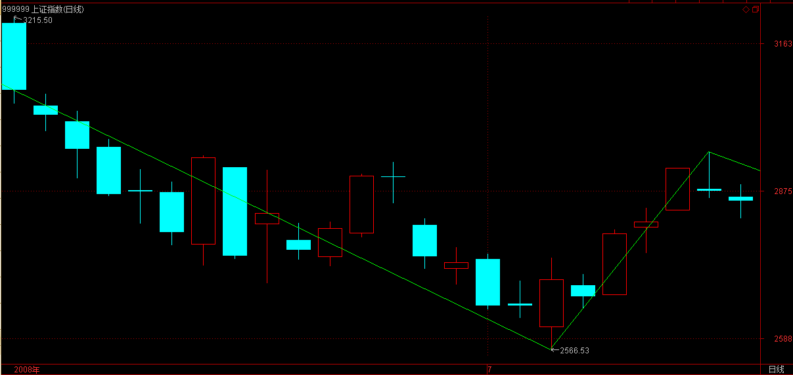
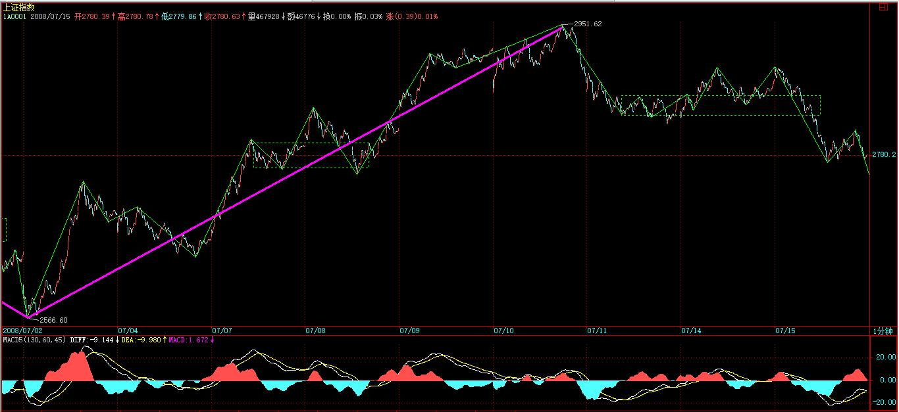
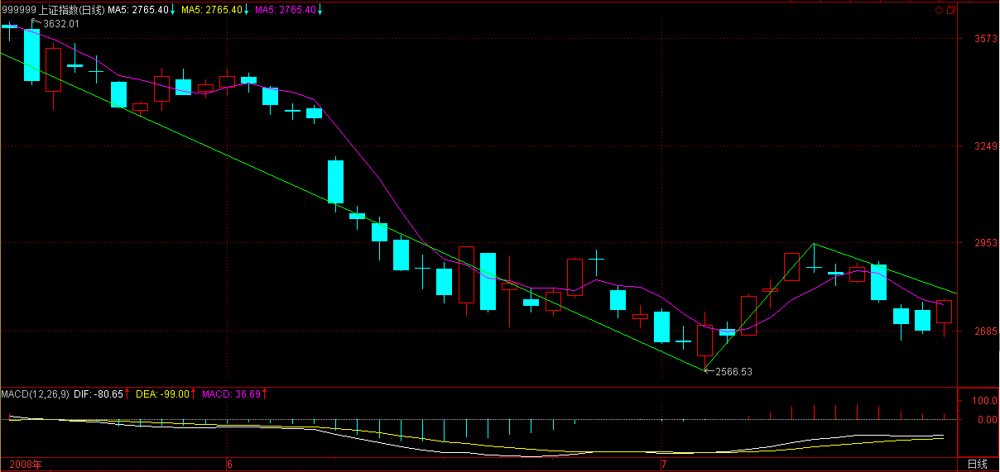
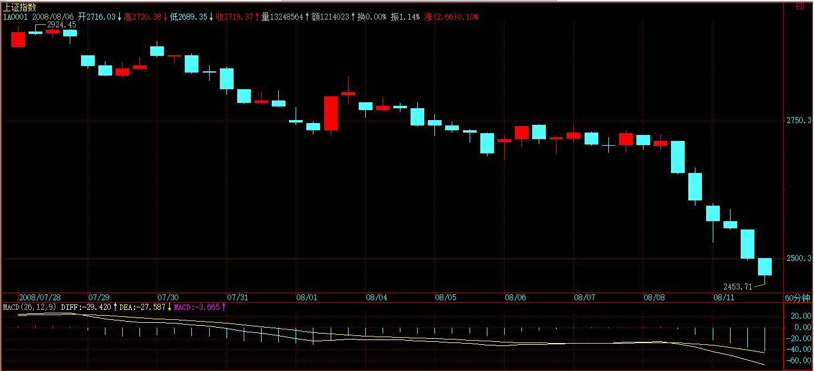
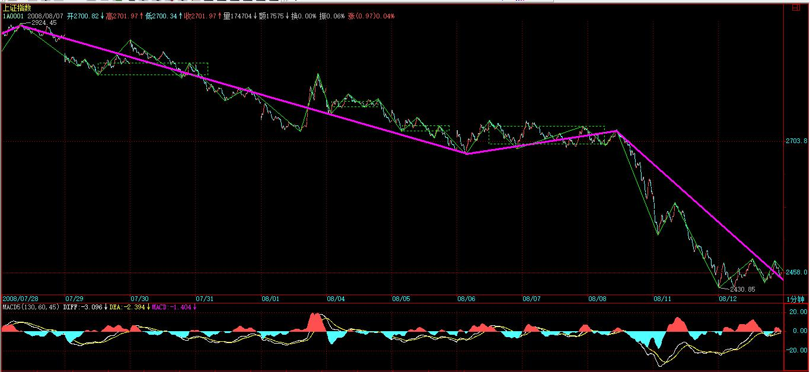

(2008-07-10 12:12:22)
先说病的事，本ID之所以暂时不打坐根治，首先必须留下一个借口去学那奇人的招数，如果完全好了，那还有什么理由？为法舍身，本就是本ID所乐于奉行的。【韶山映山红】都舍身了，法，何所依？可叹！】
其次，世界比傻瓜唯物主义者神秘得多，第一次化疗回来后，本ID说期间有一个奇遇，由于太不唯物主义，本ID一直不说，免得怪力乱神。【韶山映山红】《论语·述而》： “子不语怪力乱神。”缠师没有解读。孔子大力提倡“仁德”、“礼治”等道德观念，《论语》很少见到孔子谈论怪异、暴力、变乱、鬼神，如他“敬鬼神而远之”等。传统解析，“子不语怪力乱神”，译为“孔子不谈论怪异、勇力、叛乱和鬼神”。春秋之世，西周以来的一系列古法、礼仪都被打破，整个华夏大地陷入长时间的战乱，在那些想参与争霸的诸侯当中，很多人为了证明天子君权的旁落，为了证明自己的霸业，经常搞出些怪异之事，并崇尚武力争霸，许多诸侯国出现大量的叛乱、争权夺利之事，诸侯们也不再崇尚礼仪，而是对鬼神之事非常感兴趣，这些被称为礼崩乐坏，瓦釜雷鸣，面对这些现象，孔子一直以来都是嗤之以鼻的，他一直都推崇“仁德”，希望能恢复古法，因此他从来不谈论怪异的事，从来不给诸侯推荐武力争霸的政策，从来不参与叛乱，也不让弟子们参与叛乱，更从来都是“敬鬼神而远之”，推崇姜尚伐纣时踩踏龟甲不信鬼神的做法，所以，这个译法毫无异义。——摘自百度百科。】
而实际上，本ID在这里大张旗鼓的，不知道引起多少的愤恨，想想，本ID这里断了多少宗教神秘的门道，而这些玩意都有些怪招数，当然都很不唯物主义，那次，本ID就差点给某恶咒给弄住了，总算是以前有所福德，在最危险的时候，本ID一个学佛修咒的亲戚神奇出现，用某一个咒语把那恶咒给解了，否则那次ID哪可能去海喝山吃又回来和各位见面？
因为本ID当时身体处于接近肝昏迷状态（这是后来那奇人说的），所以才被恶咒缠住，期间，乱打电话给很多朋友，完全处于无意识状态，所以这事情有很多人都可以见证。第二天，当有朋友从北京专门飞过来时，本ID已经被那亲戚解救了。而现在，本ID身体比那时候好多了，一些小把戏肯定害不了本ID，但这世界上坏蛋也有高手的，一句话，本ID打坐是为他们准备的。
本ID这里下一战书，上次玩咒语那玩意，你那工夫就一边去吧，这世界上还有谁想高层次地玩一下，本ID现在就可以奉陪，有点见识的都知道这东西无须见面玩，全世界的牛鬼蛇神，把你们的这咒那咒、这术那术的都一起来，本ID陪你们到底。
好了，继续说股票。下午有事，没帖子了，抱歉。
【韶山映山红】本篇博客，以上原文是红色R255G0B0字体。以下原文是蓝色R0G0B102字体。】
以反弹为例子说本节，调整的只要反过来就是。【韶山映山红】反弹，调整。都不是转折。】
任一级别，都有最少的延伸时间，【韶山映山红】缠论的形态结构不属于时间函数，但与时间有关联。】
例如，一笔，由于必须有顶与底的分型，因此，必须至少延伸6个基本K线单位，也就是说，如果5日线都不能碰到，那就不会是笔的反弹了。【韶山映山红】一笔，包括顶K线、底K线，有5个K线就够了，这里为什么说至少延伸6个基本K线单位？★可以做个专题，以后研究。】
【韶山映山红】5日线都不能碰到也可以是一笔，但属于下跌中继，不会是笔的反弹。★可以做个专题，以后研究。】如果下跌的5个K线收盘价是匀速下降，MA5就是一半的位置，后面5个K线的反弹，还要把MA5拉低一半，并且走平，这样一来，三分之一都没有的反弹，就不算本级别的反弹，只是中继。】碰到MA5，实际上就是站上底分型区间的意思。没有高过底分型左K线，也就意味着顶在底中，不算向上笔的成立。】是否碰到5日线，顶分型的顶K线就可以做这个判断，并不需要顶分型的右K线来判断，从这个角度看，缠师说的至少延伸6个基本K线单位，就包含底分型的左K线。】
同样的道理，可以给出线段、1、5、30、日、周等等级别的最少延伸时间，以及相应最少挑战的均线。【韶山映山红】形成一个同级别转折，相应最少挑战的均线。】
【韶山映山红】
笔：最少延伸6个基本K线单位，但继续延伸，只要增加4个基本K线单位，就增加1笔。 最少挑战MA5均线。
线段：最少延伸14个基本K线单位，其中6个是第1笔，8个是延续的2笔。 第一种情况，至少涨破前低，那就最少挑战MA12均线，还要延伸两笔，并且高过第1笔，那就最少挑战MA20均线。第二种情况，要第5笔向上之后，形成顶分型，才能判断向上线段的成立，这样算下来，也是最少挑战MA20均线。
1分钟走势类型：最少延伸38个基本K线单位，其中14个是第1段，24个是延续的2段。 至少要有1个线段中枢。向下走势的回升中枢，第3段至少要涨破第1段的低点，才能构成中枢。这个三段中枢至少要跟前面的中枢有重叠，才可能是一个同级别反弹。也就是要有5个线段的参与，每个线段是12个基本K线单位，也是最少挑战MA60均线。 如果是一个1分钟趋势，只有3段反弹的中枢，MA38就成为本级别中枢最少挑战的均线。
5分钟走势类型：最少延伸110个基本K线单位，其中38个是第1个1分钟走势类型，72个是延续的两个1分钟走势类型。 都以至少3个次级别走势类型重叠构成1个中枢的要求去推算，最少挑战MA180均线。
待整理，待确认。★★可以做个专题，以后研究。】
【韶山映山红】网文：“猎鲸船均线级别定理：走势在10日线以下，只存在5F级别以下的下跌和盘整；走势在60日线以下，只存在30F级别以下的下跌和盘整；10日均线拐头向上代表5F级别以下的下跌和盘整结束；60日均线拐头向上代表30F级别以下的下跌和盘整结束。10日线死叉60日线代表下跌走势升级，由5F及以下级别上升为30F及以上级别。上涨反之。”】
【韶山映山红】摘自网文《缠论入门学习12---动力以及形态》(2011-01-29 01:12:14)：
一、任何动力都必然有其运动的规律，而这种规律的表现之一就是时间性。
任何一个级别都没有最大时间的限制，但有最小时间的限制。时间不够你可以忽略、睡觉，临近时间窗口，无论买卖，你该提高自己的注意力了。
举例：在2930点的时候说跨年度行情铁定没戏的原因，因为根据动力学向下动能的计算，时间根本不够。还有曾经给出的4周剧本，为何如此精确，就是因为是在测算力度后推导出的时间周期。
实战当中，可以这么想：一个线段至少是多少分钟？如果你的级别，一买之后的涨跌涨三段不能大于4个小时，那么就不能算是T+1买点的级别，那么能用这个级别干的就是T+0。
一个30分级别最少多长时间？有人算过么 ？
一笔最少是5根K线的，任何一个级别都没有最大时间的限制，但有最小时间的限制。所以缠师说本质上级别和时间关系不大，不大的意思不是没有关系，而是起点依靠了一下，而恰恰就是这个依靠，成为不患的基础。
30分钟走势理论上支持走多久都没关系 哪怕走一年呢？但最少走多久却有规定（有人讲缠师说过 1分钟--2-3天， 5分钟20天左右，那么30f就应该是半年）。
我们自己算算：一分钟有9个线段，一个线段最少有三笔，一笔最少有5个K线，一个K线一分钟，那么请问，一个 1分钟走势类型最少要多少分钟？
（5分*3笔*9个线段=一个1分的走势类型最少需要145分钟。）【韶山映山红】135】
15乘以9等于145根，而一分钟有9个线段，一个线段有3笔那就是共有27笔，其中25笔又共用的K线，那么 145减25等于120分钟，等于 2个小时，这是最最小的保证了。
差不多的 ，一般哪有那么缺德 ，就走成一笔 5根，一段15根，一趋势145根呢，一般都大于两三倍的。二两倍就是我们常见的 2-3天左右，2-3天是个概率上的说法。如果你不知道这2-3天怎么来，以及没像我这么算过， 那么我保证你是无法达到绝对的缠论自信的 ，因为，这个问题缠师在文章中不止一次提到，学如不及犹恐失之！
动力的持续状态，你可以利用不同的级别当中，动力状态（笔、线段、走势类型）的持续所需要的最低时间，来利于你的操作判断：
例如可以计算知道，如果以线段形态来操作，动力结束最少需要的（安全）时间是多少：
如果以线段来操作-----在1分图上 ，一笔是5分钟 一个线段理论上13分钟就可以实现。在1分钟图上，你判断一个线段结束其后应该是一个线段的上涨。你有把握买入就赚，但要超过T+1的限制，并且能挺到卖的时候还赚。这样就要求你----必须要在收盘前 13分钟遇见刚好是1F线段结束的。这显然不实际！
安全性的操作要求我们自己必须做到----全天有买点，都可以买，并且要求买了之后，T+1的限制不至于使得我们在股票红的时候卖不掉。
我们把这个1F的的线段最低需要13分钟的保证放大，放大到一天都是安全的时间！240除以13等于18分钟多点，系统上可以自己设置18分钟，也可以简单使用15分钟的系统自带的。
这样我们在15分的图上，选择线段级别的买点，如此操作的优势在于----任何一只股票的15分图上，线段级别的结束点之后，合力结果将会导致一个向上的线段，这里你都可以切入。因为这个线段的上涨的时间可以超过T+1的限制，并且能挺到你卖的时候还赚。】
由此可见，走势级别与均线虽然没有必然的关系，但还是有一个大致的区间对应的。【韶山映山红】有一个大致的区间对应。图上笔走势和MA5的对应最方便。】
特别地，根据经验，一个趋势中N个中枢对应的压制均线大致都是相同的，【韶山映山红】形成中枢，或者说，形成本级别反弹，而不是转折，就不能是突破均线，所以有压制均线。】
例如，第一中枢被89日均线压制了，那后面同趋势中后继的中枢，很有可能就会被同样的均线压制。【韶山映山红】一个下跌趋势，回升中枢的震荡不能上破89日均线，然后继续下跌，后续的中枢还可能还是不能上破89日均线。也就是说，这个趋势是沿着上破89日均线下行的。】
如果有一个反弹只能达到34日线，那么和前面第一中枢同级别的概率就很小了。【韶山映山红】概率很小，但依然可能，这也是均线辅助判断的不靠谱。89日均线，34日均线，相差两级，中间还有55日均线。这里，89和34是准确的数据，还是缠师随口一说？★可以做个专题，以后研究。】最后一个中枢震荡到89日均线之后，均线开始走平，而走势继续下行，背驰后反弹，如果是同级别反弹，差不多要能够再次接近89日均线。】
【韶山映山红】6124那一波牛市的上涨，支撑均线就是MA89。】
【韶山映山红】6124那一波牛市之后的下跌，压制均线是MA55，反弹到MA34的都是次级别走势。】
【韶山映山红】群聊记录：
左手渔线右手k线 2019/2/20 12:06:57
继续挖坑。。。——均线与级别的关系。
左手渔线右手k线 2019/2/20 12:30:23
走势，两种最基础的分析，即中枢分析和走势分析，使用均线看级别的方法是不一样的。
一、中枢分析合适的形态，主要是，aAb\aAbBc,以均线左上角或右下角压制均线为准，很容易看级别。
二、走势形态分析。ABC型，这种看均线看，是以ABC导致的横盘均线来看级别的。
也就是说，用均线看级别，是根据形态来看的。
以下为大盘分析，前面是2638点到3587，均线通过ABC形态来看级别，横盘为MA60上下；3587到2440，是以最小均线压制（右上角）MA60。
左手渔线右手k线 2019/2/20 12:31:24
当下2440从均线上看，日K视角上，是一个次次级别abc,即5分的abc.
左手渔线右手k线 2019/2/20 12:32:52
好了，补充完整了，整套的均线看级线的方法。当然也可用MACD来看级别。
左手渔线右手k线 2019/2/20 12:35:24
无论MACD＼均线＼裸K看级别。。最尼玛的基础的要分成中枢型（平台整理）＼走势形（ABC）两类，当然能融合是最好的。原文的东西。。。终于搞的明白一点了。
左手渔线右手k线 2019/2/20 12:36:01
不是什么大智慧。。就是原文的东西，一点一点的挖出来讨论。
左手渔线右手k线 2019/2/20 12:38:48
看过那个０００早期的结构分类资料，很容易混，就是没从走势分类为平台型＼走势型两大类去看。很别扭，估计整出新的东西来了。。
－－－－－－－－－
左手渔线右手k线 2019/2/25 15:44:38
其实你如果明白均线和级别关系，完全不用这样的图。甚至是裸K，看看就知道对应哪个级别。。
左手渔线右手k线 2019/2/25 15:47:48
拿你的图，说你的事。
左手渔线右手k线 2019/2/25 15:48:30
你要的买点，一定是下面绿色区域。
左手渔线右手k线 2019/2/25 15:49:19
裸K和均线＼MACD以前说的太多了。。不想多说了，
左手渔线右手k线 2019/2/25 15:55:00
还是略有不同。例如ａｂｃ在均线里看，和ａＡｂ在均线里看，是不一样的。ａｂｃ型，是以最大横盘均线看级别。ａＡｂ，以最小压制均线看级别。
表现在MACD上，ａｂｃ，是一次回抽再上，ａＡｂ是最少两次回抽的。。
左手渔线右手k线 2019/2/25 15:55:31
上面说的，对于用均线和MACD的一定要记牢了。。。
左手渔线右手k线 2019/2/25 16:07:00
指标这东西，没必要花时间，花时间的是原理及推导。
左手渔线右手k线 2019/2/25 16:07:47
为什么同样的指标，MACD，有的人赚，有的人亏？
左手渔线右手k线 2019/2/25 16:08:29
是你理解角度和逻辑不一样。
左手渔线右手k线 2019/2/25 16:09:16
背后深层是对走势的完全分类。工具永远是工具，代替不了原理。
】
除了最简单的笔，任何走势都是大级别套小级别的，【韶山映山红】最简单的笔，是没有内部结构的单边走势。复杂的笔，也会有内部结构，也是大级别套小级别的。】
因此，单纯一条均线的意义不大，必须是均线系统。【韶山映山红】大级别走势对应长期均线，小级别走势对应短期均线。均线系统才能反映内部结构，形成多级别联立。】
注意了，均线系统的设置，一定要根据实际的走势来，也就是你设置的均线系统，一定要和实际已有走势相吻合。【韶山映山红】不用先验数据。走势形成均线，均线诱导走势。】
例如，从6124点下来，我们选择5、13、21、34、55、89、144、233参数构成均线系统，【韶山映山红】5、8、13、21、34、55、89、144、233……斐波那契数列的神奇数字。】这里8和前后太接近，没有区分度，舍弃。】斐波那契数列的神奇数字属于叠加的递归。1、5、30、日的级别属于倍数的递归。】
各位可以看看，该系统就完全和走势极端吻合。【韶山映山红】是什么样的吻合？是描述现象？还是揭示规律？★可以做个专题，以后研究。】
例如，4778点就是233日均线支持下产生的，【韶山映山红】实际上应该是MA144。为什么会有这样的偏差？★以后研究。】6124大牛市上涨的支撑均线是MA89，这里跌破支撑均线，下探到高一级的均线止跌，已经算是同级别调整。】
其后在55、89日均线上构成多头陷阱，【韶山映山红】在MA144止跌、反弹，没有触及MA89，回踩MA144，再次反弹，在MA55下穿MA89的死叉位置有一点迟滞，之后上穿MA55和MA89，随后又掉头向下。这里有日线笔的内部盘背，没有abc盘背。】同级别调整之后，又有同级别反弹，形成同级别二卖，所以是多头陷阱。】
其后下跌一直受制于21日均线直到3000点下，【韶山映山红】有过上破MA13，没有上破MA21。MA89级别的反弹，接着MA21级别的下跌，属于非背下跌了。】
而其后反弹又被55日均线精确压制，【韶山映山红】上破MA34了，没破MA55。这里被MA55压制有什么讲究？★以后研究。】MA89级别的多头陷阱，之后的反弹被MA55压制，意味着只是MA55以下级别的下跌。】MA21级别的非背下跌，MA55级别的反弹，还是低级别。】
接着的下跌，一直在13日均线下直到这次反弹。【韶山映山红】MA89级别的反弹，接着MA21级别的非背下跌。MA55级别的反弹，接着MA13级别的非背下跌。】
【韶山映山红】这里，MA13级别的下跌，力度比MA21级别的下跌还要小一些，属于阴跌。】
该系统对走势的吻合程度显然是很高的，在后面走势没出现大变化时，当然可以一直沿用。【韶山映山红】相对平稳的趋势走势，均线系统对走势的吻合程度就很高。大的盘整，或者各个走势的级别混乱，甚至股灾，就不一样了。】
由此可见，55日（89日很快将与之缠绕）是本次反弹真正的试金石，如果不能突破甚至不能触及，就意味着这反弹级别依然不够大，很有可能回试后再构成另一同级别组成更大级别的反弹。【韶山映山红】第一次反弹破MA55了，但是视为多头陷阱。后面的中枢没有接近MA55，接近MA55的反弹只是笔级别反弹，即使力度够了，级别也不够。本次反弹如果直接上破MA55，级别也不够大。所以，这里所说的级别，不是中枢递归的级别，而是力度的级别，或者说是能量的级别。】

而短线来说，34日线就是一个很实际的考验了。【韶山映山红】MA34是什么样的考验？★以后研究。】不破就会形成中枢，MA34依然是压制均线。破了才算是一个反弹。】
用这个系统，可以给出一个完全的分类去判别走势的强弱与先后。【韶山映山红】用涨跌破的均线来区分一段走势的力度。】
当然，单纯看指数还是不是该分类最有用的地方，那是单一品种终的用法。关键我们还可以打横来用，对所有股票按此进行分类，由此市场轮动的节奏就一目了然了。【韶山映山红】单个股票是纵向，多个品种是横向。】
分类的原则是本次反弹目前为止未曾攻克的最小周期均线，因此，8条均线就可以分成9类，最差的一类当然就是完全在所有均线下那种。【韶山映山红】这样的分类有缺陷，站上长期均线的也可能跌破某些短期均线，尤其是震荡市。所以应用范围和使用方法要注意。】
注意，最厉害的不一定完全在所有均线之上的，为什么？（各位思考一下，不要所有答案都依赖本ID，思考一次的效果比本ID说1000次答案都要好。）【韶山映山红】在所有均线之上的也可能见顶了。买点都在相应级别的均线之下。】
还是用本ID长期反复折腾的股票为例子：
000802、000998、600636显然是最厉害的第9类；【韶山映山红】第9类，高于MA233。】
【韶山映山红】000802北京旅游，2014.10.24变更为北京文化。】
【韶山映山红】这个票不是单纯的站上了MA233，而是站上了所有更短期的均线。】
【韶山映山红】000998隆平高科。】
【韶山映山红】这个票不是单纯的站上了MA233，而是站上了所有更短期的均线。】

【韶山映山红】600636三爱富】
【韶山映山红】这个票不是单纯的站上了MA233，而是站上了所有更短期的均线。】
600139属于第8类；【韶山映山红】第8类，高于MA144，低于MA233。。】这篇博文发布于2008年7月10日中午，600139绵阳高新上午收盘于15.38元，下午回落，收盘于15.03元，当时MA233一直处于上扬状态，当日收盘是15.23元，所以上午还是在MA233之上，属于第8类，下午跌破了MA233。】
【韶山映山红】600139绵阳高新，2007-04-11变更为*ST绵高，2009-06-04变更为西部资源。】
600578、600607属于第7类，这几天在89日线上的调整极端标准；【韶山映山红】第7类，高于MA89，低于MA144。】
【韶山映山红】600578京能热电，2013-10-10变更为京能电力。】
【韶山映山红】600607上实医药，2010年2月3日被上海医药601607吸收合并。】
600195、600343属于第6类；【韶山映山红】第6类，高于MA55，低于MA89。】这篇博文发布于2008年7月10日中午，600195中牧股份上午收盘于16.81元，下午回落，收盘于16.45元，当时MA55一直处于下行状态，当日收盘是16.90元，现在用历史数据计算，上午收盘的MA55是16.903元，全天收盘的MA55是16.896元，都可以看作是16.90元，也就是说，上午收盘价已经跌破MA55了。如果当日缠师没看盘，回顾前一天，MA55是16.85元，MA55是16.89元，也跌破了。所以我们可以推断，缠师说600195中牧股份属于第6类，不是单纯看收盘价，而是看整个K线是否有站上的情况，并不那么精准地计较。】
【韶山映山红】600195中牧股份】
【韶山映山红】600343航天动力。】
【韶山映山红】600343航天动力。从这个例子就更能够清楚的看出来了，明显的不能站上MA55，甚至低一级的MA34都站不住，只是上影线高了一下。所以我们可以得到一个初步的结论：反弹走势的均线强弱判断，以摸高为准。】
600737、000600属于第5类；【韶山映山红】第5类，高于MA34，低于MA55。】
【韶山映山红】600737中粮屯河。2017-02-17变更为中粮糖业。】这个票，高于MA233，却没有被列入第9类，因为低于MA144、MA89、MA55了，考察的不是整个走势的是回跌反弹的力度。】
【韶山映山红】000600建投能源。】
而大盘最大周期均线只站上21日，属于从最弱数起的第4类。【韶山映山红】第4类，最大周期均线，只高于MA21。】
从这分类可以看出两点，统计一下，目前被34天线上下压制的股票是最大量的，这就提示我们，34天线对于大盘也是压力很大的，由于大盘还没到该线，因此这提示就有预示的意义了。【韶山映山红】那些票上攻MA55，大盘才会上攻MA34，所以压力大，暂时不能看好后势。】
【韶山映山红】 下面用区间检索的方式，看2008年07月10日的分布情况。共3437个股票，检出1912个票，还有大量的不符合这样的检索方式，检出的也可能有重叠。 除非所有的股票都呈均匀一致的多空散发形态，否则这样的评估有系统偏差。
0～MA5：325
MA5～MA13：34
MA13～MA21：113
MA21～MA34：926
MA34～MA55：245
MA55～MA89：80
MA89～MA144：38
MA144～MA233：4
MA233～ ：147
】
此外，由于每类股票一旦在N类调整，要到N+1类，至少有很大一段时间折腾，所以这就给了一个轮动的最好选择，一旦一个趋势级别的走势在N类上出现顶背弛，就可以先出来一下，至少有几天偷欢的时间可以去找找别的已经调整可以再启动的股票或者补涨的。【韶山映山红】大量股票调整跌破MA34，要回到MA55之上，至少有很大一段时间折腾，反弹回MA34的走势，一旦出现顶背驰，这次反弹直接突破MA55的可能就不大了，还有继续折腾，就可以先出来一下，可以去找找别的已经调整跌破MA34，还没有反弹回MA34的股票。】★个股的轮动，可以做个专题，以后研究。】
还有一种更重要的，就是根据板块来，要判别一板块的强弱很简单，就是把类别数平均一下，越大越强，而这个平均类别数，可以叫缠中说禅板块强弱指标。【韶山映山红】一个版块的股票，按均线系统分类后，得到的平均类别数，叫缠中说禅板块强弱指标。】
最强的板块属于领涨板块，该板块的动态就十分关键了，【韶山映山红】密切关注领涨板块的动态。】此外，把所有板块的缠中说禅板块强弱指标列在一个图上，其轮动的次序与节奏就一目了然了，根据这并配合具体股票的走势分析来，轮动操作当然就极为简单了。【韶山映山红】板块轮动的次序与节奏。★★可以做个专题，以后研究。】
以上操作，用电脑设计一个程序是很容易解决的，这就不是本ID应该为各位准备的事了。面包的制作方法说了，没理由让本ID还把面包烘好一个个喂吧，各位就自己糕点一把了。【韶山映山红】设计一个程序，监控板块轮动的次序与节奏。★★可以做个专题，以后研究。】
夜无涯
厉害厉害.居然用这末简单的方法解决一个复杂问题。
2008-7-10 20:35
看不懂啊?什么是类别数?怎么算啊>高手们指点一下啊.
===
比如银行板块，根据今日的分类原则确定出此板块的每个个股的类别数，它们都不一样，但最后可以平均一下，最后求得的类别数就是缠中说禅板块强弱指标。
2008-7-10 21:17
[匿名] 虫客
11号凌晨近3点打开缠博，《过雪山草地》的悦耳歌声沁入耳畔。肯定不是贾世俊的......难到是缠的吗？
2008-7-11 03:25
【韶山映山红】《过雪山草地 (歌唱)》 《过雪山草地 (朗诵)》中国人民解放军战友歌舞团 《长征组歌 》(1976年录音)】
【韶山映山红】《过雪山草地》雪皑皑野茫茫，高原寒炊断粮，红军都是钢铁汉，千锤百炼不怕难，雪山低头迎远客，草毯泥毡扎营盘。风雨侵衣骨更硬，野菜充饥志越坚，官兵一致同甘苦，革命理想高于天。】
【韶山映山红】不知道这个人当年听到的是哪个版本的《过雪山草地》。他说的贾世俊的，是最早版的《长征组歌》，就是下面这个视频。贾世俊的《过雪山草地》https://v.qq.com/x/page/i0339rqclib.html 】
艾格银思
均线分类对板块的轮动的把握应该是比较好的、但真正好的还是中枢和走势。只要把握了走势的基本形态，就对操作有了一个坚强的依靠
2008-7-11 07:57
新浪网友
缠论就像教科书一样，只是有人能用它考清华，有人却只能考零分，个人造化！
必须在股市里出生入死才能领悟真谛！
勤奋的人才能开窍！有些人不管学什么理论，天生就不适合进股市！
2011-9-11 21:31
特别地，根据经验，一个趋势中N个中枢对应的压制均线大致都是相同的，例如，第一中枢被89日均线压制了，那后面同趋势中后继的中枢，很有可能就会被同样的均线压制。如果有一个反弹只能达到34日线，那么和前面第一中枢同级别的概率就很小了。
=================
给出了一个大致粗略的看盘方法。
2011-12-11 13:46
由于每类股票一旦在N类调整，要到N+1类，至少有很大一段时间折腾，所以这就给了一个轮动的最好选择，一旦一个趋势级别的走势在N类上出现顶背弛，就可以先出来一下，至少有几天偷欢的时间可以去找找别的已经调整可以再启动的股票或者补涨的。
====================
这又是换股操作必须密切注意的事项。
2011-12-11 13:47
最强的板块属于领涨板块，该板块的动态就十分关键了，此外，把所有板块的缠中说禅板块强弱指标列在一个图上，其轮动的次序与节奏就一目了然了，根据这并配合具体股票的走势分析来，轮动操作当然就极为简单了。
=================
这是主力运作的轨迹，把握好了，那踏上节奏的愉悦就是挣三瓜两枣所能相比的，这东西可是不传之秘啊！
2011-12-11 13:48
【韶山映山红】本文后留言全部检索完成。】
2019-11-18
2019-11-25
2019-12-01
2019-12-09
2019-12-15
2019-12-29
2020.01.04
2020.01.03
2020.01.13
2020-01-19
2020.01.28
(2008-07-11 11:46:05)
先说一句梦话：该修理都会被修理，该被王先生的最终都王先生，当然，时候未到，过了该过的无聊节目，真正的修理才会来的。本ID什么都没说，梦话一段，千万不要当真。【韶山映山红】】
下午要去理疗，没时间写帖子，抱歉。
【韶山映山红】以上内容，宋体24加粗，红色R255G0B0。】
确实，如果你脑子里已经有了期盼，那么什么理论都是白费的，因为你甚至可以把刀子的白光看成了情人桥下那一轮月光。
昨天中午就出来的帖子，这么多话，当然主要都是针对长期来说的，都是你终身受益的东西，但例子里也顺便给了短线的重要提示，可惜似乎看到的不多，【韶山映山红】“从这分类可以看出两点，统计一下，目前被34天线上下压制的股票是最大量的，这就提示我们，34天线对于大盘也是压力很大的，由于大盘还没到该线，因此这提示就有预示的意义了。”】
竟然很多人，在今天明明要构成顶分型的时候还谈论轮动，【韶山映山红】背驰了。】
虽然这顶分型最终不一定延伸为笔，但其中的风险是理论性存在的，因此这时候脑子里风险是第一位的，就算有轮动也可能是刀口舔血的勾当。【韶山映山红】向上笔的时候做轮动。】

股票不是吃饭，一顿不吃就饿得慌，理论是让你心里不受贪婪恐惧影响，别明明是刀子都跑过去大吃一顿。请好好重温这两段：
“从这分类可以看出两点，统计一下，目前被34天线上下压制的股票是最大量的，这就提示我们，34天线对于大盘也是压力很大的，由于大盘还没到该线，因此这提示就有预示的意义了。”
“此外，由于每类股票一旦在N类调整，要到N+1类，至少有很大一段时间折腾，所以这就给了一个轮动的最好选择，一旦一个趋势级别的走势在N类上出现顶背弛，就可以先出来一下，至少有几天偷欢的时间可以去找找别的已经调整可以再启动的股票或者补涨的。”
例如在昨天下午，一个品种出现短线顶背驰又接近压力线，应该干什么？如果这品种恰好是大盘指数，应该干什么？注意，帖子可是中午就给出了，这是一个很好的现场例子，不管你如何了，但一定要记住这个例子。
今天，除非下午大幅度起来形成包含关系，否则这顶分型就构成了，因此最关键就是5日线，不有效破就不形成笔，就会再冲一次34天线，否则将形成笔的调整，那就等笔对应的短线出现底背驰再说了。
昨天下午正确操作，现在就不用左右为难，左右为难的操作都是因为节奏不对，因此，节奏是一个永远的主题，高手还是低手，最终考验的就是节奏，轮动只是节奏的一种方式，而最重要的节奏，还是买卖点，一切的节奏都必须以此为基础，当然轮动也不例外。
【韶山映山红】以上内容，宋体18加粗，绿色R0G102B0。】
股票不说了，说咒语。昨天本ID一说，胆子小的可能就心里发毛。其实，咒语并不神秘。口，对应于心，两个口，也就是两个心之间“几”的其中一种关系，就是咒语的本质。何谓“几”？细微的达到。换言之，“咒”就是心与心之间一种非显然肉眼可见的联系，而“语”，本质就是一种逻辑关系的显发，“咒语”，不过就是这种心与心之间隐微的逻辑联系的显发。
“咒语”，有善有恶，有能量大的也有能量小的。一般人修炼的恶咒，基本都来自六道里一些怪异的存在。而能量大的善咒，如大家都听过的“大悲咒”等，都来自佛菩萨或一些有大成就的修炼者，并有诸多六道中向上存在的护卫，就算一般人修炼，也能克制住那些恶咒。
咒语的修炼，其实都不太容易，主要是需要通过反复地念，例如，有些要练够100万次才会有小成，再多少多少次才有进一步的成就。不过，这咒语的修炼倒是一个很科学化的东西，任何人都可以去验证，而且其成效也是层次分明，这里不需要争论，要实际去实验，任何以此来空口说白话的，先找一个咒语念100万次再说。
至于恶咒语对人的影响，需要太多的条件。例如，被咒语的身体特别虚弱或已经在神志不清的状态，或者那人本来就有点心弱，很容易受到外界影响等等。而恶咒语的人，其实要冒很大风险，例如一旦被破，其人受到的反击是N倍强烈的。所以，一般没有深仇大恨或者宗教之类的原因以死相搏，一般很少人玩这种把戏，特别对还不知道根底的人。
但有些妖术，功效可能更大点，本ID之所以要挑战这些牛鬼蛇神，当然是本ID对这些都再熟悉不过，但还是不敢说都完全了解，真希望能有人搞出点本ID不知道的妖术，法法平等，妖术不通如何降之，这也是为法舍身的一种，如果真有妖术的一种，大不了转身再来，不通万法，何来真正的成就？
当然，本ID甚至托大一说，这本是秘密，不该说的。就是，厉害的妖术攻击反而有利于本ID恢复原来的打坐层次，你只要战胜了那妖术，就至少重新提升到相应的层次上了，这是本ID尽快恢复的一条捷径，所谓刀子上行，虽然危险，但如果有人真有这本事，迟早都要面对，还不如挑明了干，这和用身体做实验是同一个道理。
好了，牛鬼蛇神，来吧。
【韶山映山红】以上内容，宋体18加粗，蓝色R0G0B102。】
(2008-07-13 08:41:48)
先汇报一下周五理疗来的活动。理疗前，左侧异常不舒服，本ID的弟弟又不会一些招数，十九路的人又毫无踪影，本ID只好外出觅食，找到一个尚可的中医。本ID开始试图说服其对那奇人说的病根大打出手，结果他中老年性地异常小心，一再追问本ID颈部的肿块情况，本ID只好说了些善意谎言，把其引诱到病根外一层的病象上，然后说，你怕那玩意，那就对这下手，总不会有问题吧。先金钱交易，其后一阵忙乱的动作，其中涉及一种最普通的中医手法，那奇人要求的他不会，这倒弄得还可以，半小时后，本ID就可以扬长而去了。
回到公寓，如洪水泛滥，时塞时泄，2小时不到时间，不仅左侧麻烦消，颈部肿块也明显地变小，看来奇人与本ID现在认定的病根又被验证了，蒙人在外围用最普通的手段竟然有这效果，我弟弟也终于很明确地说了一句，看来那人说的是对的。
不过，从这以后，十分不健康：先找来两人凑成四人帮出去对一桌子美食严重文革了N小时，然后回来在四方城下展开了16圈的连夜鏖战，在东方发白之际才鸣金收兵，起来午饭后又去看房子去。现在地点基本定了，那房子在CBD里，顶层复式可带游泳池，由于要大动土木，所以实地考察、约设计师看能否有好的装修效果，实在够折腾。
晚上回来，发现肿块竟然没有变大，深夜又变成锥型，现在起来了，基本还保持，不知道是否有些古怪事发生，本ID等着。
现在有两套房子可选择，除了上面可带游泳池的那套，还有一个面积小不少的平层，想在新房子看奥运，就只能后者了。基本也就这两个选择，之所以不能完全确认，是前者的装修效果能否满意必须让设计师给本ID信心，因此只好等月底之前确定后再说了。
好的，该汇报的都汇报了，就继续打坐吧。
二十世纪五、六十年代的学术闹剧里，曾有所谓的“合二为一”伪擂台毛大爷的“一分为二”，且不说结果如何，都不过五十与一百的把戏。无论“合二为一”还是“一分为二”，都不过是在矛盾论、辩证法弱智文字游戏的自渎空间中展开。【韶山映山红】50年代和60年代中国文坛和学术界有三大冤案，文艺方面有“胡风案”，哲学领域有“杨献珍案”，思想领域有“邓拓案”，杨献珍的哲学“罪案”是“株连最广”的冤案。就如何概括对立统一规律的问题，1962年11月，中共中央高级党校校长杨献珍提出“合二为一”，这一命题来源于明代哲学家方以智《东西均》这本著作，杨献珍再用现代哲学思维加以发挥。显然，这样不由自主地使人联想到“合二为一”与“一分为二”对着干。嗅觉敏锐的康生，立即将杨献珍在课堂上讲述“合二为一”的情况向毛泽东汇报。毛其时已十分敏感，马上表态：他这是反对我的。此话一出，杨献珍命运可想而知：撤销校长职务，调出党校，并在全国范围内发动批判“合二为一”论。1964年7月17日，《人民日报》发表文章点名批判杨献珍的“合二为一”论，接着《红旗》杂志发表了《哲学战线上的新论战》一文，称杨献珍是在国内外阶级斗争尖锐化的时候有意识的适应国际现代修正主义和国内资产阶级、封建残余势力的需要，宣传矛盾调和论。毛泽东1964年8月所作《关于哲学问题讲话》是其新中国成立后的重要篇章，影响甚广，特别是《讲话》中关于只有搞阶级斗争才能搞哲学的观点。大凡领袖人物提出治党治国纲领，必须要有理论作支撑。毛泽东也一样，他的“阶级斗争为纲”学说的理论根据，是“一分为二”的哲学观。】
站在学术的角度，世界上大概没有太多事情比二十世纪五、六十年代后还以某某伟人说的口吻在十几亿人口的大国中继续谈论所谓“物质无限可分”的正确更让人喷饭了，而这竟然成了所谓“一分为二”弱智论点的证据。而实际上，任何生活于量子力学之后玩学术的人，除非脑瘫，都应该知道“分”是有边界条件的，“可分”更必须建立在可量子力学的层面上，“物质无限可分”只不过是不学无术者的弱智幻想。
一且不立，何来立二？只有那些忒二之人，才会“一分为二”、“二分为一”地显示其二。
有人可能要以恩格斯说事，反驳本ID，既然你要捍卫马克思，那么恩格斯还有《自然辩证法》。而实际上，马克思是马克思，老马与恩格斯之间的思想差异，前人多有论述，而恩格斯最二的，就是那《自然辩证法》了。恩格斯更像是马克思向列宁异化的中间桥梁，其中的历史渊源与演化，其实是一个很有趣的课题，只是这种课题，大概是小儿不宜、大国亦不宜矣。
所谓矛盾论、辩证法，不过是人类游戏中画地为牢后一串逻辑呓语，而学且以之为宝的（排除智力问题，更多地关系于政治表演），又以此为牢，“物质无限可分”地无限K粉了。
矛盾论、辩证法的弱智呓语太多，一一批驳和连载主题太不靠谱了，这里就以最早的一条之一“人不能二次跨进同一条河流”为例子，让各位看看其无聊把戏。
任何“同一”性论断，必须建立在可观察的角度，而可观察，意味着重复性，一次性的东西都不存在可观察性的。因此，“同一条河流”判断的建立，也必须在重复性的可观察基础上，否则，那“同一条河流”不过是一串脑电波的颤动，和实际的世界毫无可观察的关系。
因此，如果没有任何手段去重复确认这“同一条河流”可观察的客观可建立，“人不能二次跨进同一条河流”逻辑呓语就更无法建立了；如果存在某种手段去重复确认“同一条河流”可观察的客观可建立，那么，可观察性是不能在观察者跨进河流后就变得不可观察，可观察能重复多少次，当然就能跨进多少次这在可观察保证下的“同一条河流”，谁说我们不能泡在水里观察河流的？
现在，环境恶劣，那些河流都很脏，如果没有一定的解毒能力，泡吧泡网泡脚泡鸡鸭鹅兔也千万别跨进那无聊的矛盾论、辩证法呓语河流去泡，太脏！
至于本ID，天堂地狱任往来，就甭说这矛盾论、辩证法的肮脏河流。吸尽千江脏水，吃尽世间毒物，才是真修行、真打坐，没有这见地与实行，还是回家生孩子学矛盾轮、辩证法去吧。
(2008-07-14 06:40:48)
准备提早回医院，主要是看到很多人为本ID担心，而本ID又是一个一诺千金的人，熬夜16圈好与不好，本ID当然分得清楚，其实早几天，已和我弟说要通知不打了，结果阴错阳差没通知成。
既然上周说好的事，就不能爽约，即使是地狱，为了一个诺言也必须去，这点在南方生活太长时间的人大概都很难理解，这大概就是所谓的燕赵古风，否则就不会有赵氏孤儿、荆柯刺秦了，可惜这风气，现在少矣。
病中还是有真古风的，本ID平时最怕麻烦人，但有一朋友，现在属于经济圈里最牛的人之一了，是某一最热门行业之一中国最大公司的董事长，和病中的本ID比起来，他可是春风得意马蹄疾，但这次，就真看出其真性情。且不说N次专门来看，最主要有一句话让本ID感动，大概意思是：真朋友就用来麻烦的，如果不是真朋友，不麻烦也不乐意。
来这里的，应该有不少未谋面的真朋友，为此，本ID也要改变一下客观环境，回到医院，那些不健康的事情自然没机会了。
今天，有朋友从深圳过来，所以必须接待一下，没时间写帖子了，明天如果要回医院，估计也没时间写。医院情况如何，等上班时联系他们领导才知道。
股票在周五在5日线标准化折腾，结论依旧，站住再冲一次，站不住就延伸为笔的底背驰后再说了。
是否节奏一把，就根据自己能力与情况来了。由于T+1，这种情况确实限制了理论化小级别中最精确的操作，本ID的理论如果用来小级别的短线，最好的就是T+0或者期货之类的，所以，没能力的，不一定给自己太高要求。
不说了，今天事够多的，先下，再见。
新浪网友
第一次这么早，惊喜！知道缠是北方人，高兴！祝福缠！！
2008-7-14 06:54
缠君好!祝一切安好!
南方也有一诺千金的朋友!
2008-7-14 07:53
缠姐把自己“不能爽约，即使是地狱，为了一个诺言也必须去”的性格归于北方燕赵古风，这并非不可。但我虽然是北方人，虽然也是如此性格，但我却觉得这种作为作风是根据性格而定的，当然北方人具有这种性格的比较多，但这种性格有期特殊性，并不一定是地域的特征。很显然从这些可以知道缠姐的性格如何。这其实也是一方面的不自制。
从此可见缠姐人还是不错的，不太愿意决绝，但有时候对自己身体的不拒绝会后很不好的结果。再次建议缠姐要有度的截至 为了身体着想！
再次建议缠姐多多打坐修炼！！
2008-7-14 08:47
新浪网友
听你的意思,南方人就是有爽约的习惯?
燕赵就没有小人?那警察估计都成了摆设了,哼
女人嘛....何况
算了,不说了.再见.
2008-7-14 08:53
夜雨
其实许多南方人也很重义气的，一般不轻许承诺，但如果承诺了，一般都会尽量做到，北方人，有时看似豪爽，但真的要落实，可能又无影踪了。
不是要挑起地域讨论，只是想说明，哪里都是差别不齐的。燕赵古风，在心里，而不是在地域。
2008-7-14 15:48
新浪网友
夜雨 (2008-07-14 15:48:20)
其实许多南方人也很重义气的，一般不轻许承诺，但如果承诺了，一般都会尽量做到，北方人，有时看似豪爽，但真的要落实，可能又无影踪了。
不是要挑起地域讨论，只是想说明，哪里都是差别不齐的。燕赵古风，在心里，而不是在地域。
______________________________
南方重文重商，是搞建设的好手。北方厚重少文，是喝酒打仗的类别。此乃大概而论，其实信用的实质之一是可以大幅度降低成本。
燕赵之风自从其被记录传承，已经是传统文化的组成部分，分不清南北了。但地域气候生活习惯打上的印记，也不是那末好蹭掉。今人出世后就在村里乱转，没什么东西南北了。祖宗的家伙什基本都在祖坟里，祖坟在那没几个记得了。 zr
2008-7-14 16:15
夜雨
新浪网友(2008-07-14 16:15:46)
南方重文重商，是搞建设的好手。北方厚重少文，是喝酒打仗的类别。此乃大概而论，其实信用的实质之一是可以大幅度降低成本。
燕赵之风自从其被记录传承，已经是传统文化的组成部分，分不清南北了。但地域气候生活习惯打上的印记，也不是那末好蹭掉。今人出世后就在村里乱转，没什么东西南北了。祖宗的家伙什基本都在祖坟里，祖坟在那没几个记得了。 zr
－－－－－－－
是啊，中国传统的道德廉耻，一些基本的要求，现在许多已经变成高标准了，解放以来，最惨烈的就是道德水平的沦落，在一个号召可以打老师，与家人因为思想观念不同，可以划清界限的氛围中，如何能传承呢？现在是在补课，可基础都没有了，上层建筑变成空中楼阁，事半功倍啊。
2008-7-14 16:24
新浪网友
夜雨 (2008-07-14 16:24:34)
是啊，中国传统的道德廉耻，一些基本的要求，现在许多已经变成高标准了，解放以来，最惨烈的就是道德水平的沦落，在一个号召可以打老师，与家人因为思想观念不同，可以划清界限的氛围中，如何能传承呢？现在是在补课，可基础都没有了，上层建筑变成空中楼阁，事半功倍啊。
___________________________________
仗义、诺言、廉耻、道德让位给强权、阴谋、武力、法规几乎是个必然。进化论本来就规定弱者去死这一条路。提点异议就是反科学，还是看看老师怎么解这个结吧。这么说有点拄拐棍的意思，为老师所鄙视，但没办法，谁叫咱笨呢。 zr
2008-7-14 16:44
dingding100
“不能爽约，即使是地狱，为了一个诺言也必须去”
当然，遵守诺言是美德，但也得看看这个诺言是什么，身处什么状况，冒着损害身体的代价去遵守打麻将的诺言，我还是认为这种古风不要的好了，太过机械和呆板；
再当然，如果你这打麻将的诺言是为了尽忠或尽孝，还是能够理解的；但还是要以身体为重，记得：留得青山在，比什么都重要！
2008-7-14 16:56
夜雨 (2008-07-14 15:48:20)
其实许多南方人也很重义气的，一般不轻许承诺，但如果承诺了，一般都会尽量做到，北方人，有时看似豪爽，但真的要落实，可能又无影踪了。
不是要挑起地域讨论，只是想说明，哪里都是差别不齐的。燕赵古风，在心里，而不是在地域。
============================================================
这个事情是生活相对论。承诺太随便太多，践行自然容易打折扣；承诺时已经考虑践行的可能性，践行的机会就比较落实。
跟北方汉子打交道容易得到承诺，南方人吝于承诺，现象比较普遍。其实非关道德古风之类，性格因素比较多。
2008-7-14 17:01
我是南方人
南方人中一诺千金的不少，这话应该改改，改成“现在中国人中..........”
看来楼主歧视南方人。
2008-7-14 17:10
新浪网友
dingding100 (2008-07-14 16:56:52)
“不能爽约，即使是地狱，为了一个诺言也必须去”
当然，遵守诺言是美德，但也得看看这个诺言是什么，身处什么状况，冒着损害身体的代价去遵守打麻将的诺言，我还是认为这种古风不要的好了，太过机械和呆板；
再当然，如果你这打麻将的诺言是为了尽忠或尽孝，还是能够理解的；但还是要以身体为重，记得：留得青山在，比什么都重要！
___________________________________
做不到为什么要说？
先说了再看，有利就做；没利或有害就不做。--西人就这么干的，你学得不错。
青山留给谁？--美国人把自己的油田留着，油价150，你也是帮忙买单的一个。
2008-7-14 17:12
真性情 我喜欢
真性情 我喜欢！来四川6年了 没交下一个真朋友，今听博主一说才醒悟，根源就在这真性情的缺失上。
2008-7-14 17:32
“士为知己者死"，这份燕赵之风至今犹存，已不仅限于燕赵之地。岭南文化是保存中华古文化较多的一类，连语言都不例外，这个更不是例外了。豪爽，也有境界之分的。孙中山当时建民国商定国语的时候，那时的议员讲粤语占大多数，但中山先生坚持把“普通话“定为国语，这份豪爽的境界，岂是荆轲能比？
中原文化对岭南文化有些排斥，也是目前社会状况的一种不正常，以至于不少人认为岭南文化等于铜臭味。希望缠姑姑能用心领略一番。
2008-7-14 18:52
新浪网友
缠哥哥:可别瞧不起南方人.俺是南方人,作出的许诺会一直挂在心上,但渐渐学会了不轻易应答和从容拒绝.
2008-7-14 18:59
风的色彩
既然上周说好的事，就不能爽约，即使是地狱，为了一个诺言也必须去，这点在南方生活太长时间的人大概都很难理解-----一直生活在南方,但也不乏豪情仗义

2008-7-14 19:11
本人远祖就是赵燕人，因南迁而离故土，虽然我已不是北方人，但性格仍喜豪义的那一种，没有人教，生活习性仍有北方人的影子，感觉南方人喜欢绣花没意思。
2008-7-14 21:15
听你选的这首《走上这高高的兴安岭》感觉舒服极了，只听这首，其他不好听，反复听了10余次吧。《大别山》歌好，唱得不行啊
2008-7-15 13:32
【韶山映山红】《走上这高高的兴安岭》海政歌舞团吕远创作、吕文科原唱。吕远，中国著名词曲作家，代表作品 《泉水叮咚响》、《克拉玛依之歌》、《走上这高高的兴安岭》、《我们的生活充满阳光》等。吕文科，男高音歌唱家，参演大型舞蹈史诗《东方红》。】
本人喜欢豪放的，辽阔的，乡土的，悠扬的，田园的，牧歌的，散发着泥土的芬芳和自然的气息的民歌和创作歌曲
2008-7-15 13:36
孤军
其所指的某一最热门行业，很可能就是创投，而创投业中国最大公司非深创投莫属，深创投的董事长靳海涛，正是当年亿安科技总裁，也是李彪好友
2009-3-31 16:13
【韶山映山红】本文后留言全部检索完成。】
(2008-07-15 06:00:25)
本ID现在南方，而且至少有N年都要居住于此，当然没有任何理由去歧视任何人，昨天的例子只是说世间存在一股楞劲，明知道是别人错误造成的状况改变也没有分辩与算计，只会按诺言从容赴死，理由不为任何民族、道义、清白等，只为一句话，这种人大概还是北方的气候中能产生多点吧。【韶山映山红】南方经济发达一些，算计也多一些。也许能够有足够的契约精神，契约和承诺，还是有区别的。】
医生说本ID太早回去没意义，化疗要下周才能开始，所以本ID还是下周才回去，不过已经和我弟说好了，房子的事情全归他管，一切娱乐活动也停止，本ID只负责病的事情了。
别的就不说了，下午要去长时间理疗，所以没帖子了，抱歉。
先下，再见。
(2008-07-16 06:12:17)
首先说一句狠话，虽然本ID这里不删帖子，本ID更不介意一些因贪婪而被骗的傻蛋因看某些广告中招，但那些整天上来骗散户入会的废物点心，还是最好自觉一点。
大盘这几天走势的标准程度，有目共睹，上不了5日线，调整必然延伸为笔，
所以就等日线图上的笔对应的分时图上下跌走势类型出现底背驰再考虑是否介入了。

股票不说，最近从最高开始，逐步谈论必须保持经济增长的问题，现在才谈论，似乎又晚了，还是重温本ID2月的帖子“要通胀还是要经济增长 (2008-02-28 15:53:15)”，请问，我们的管理层什么时候才能治未病呢？
本ID现在也没时间和这些无聊人折腾，每天都要理疗，所以帖子只能简单了，抱歉。
先下，再见。
(2008-07-17 06:01:04)
这题目其实是一句废话，人的事情，无论被吹嘘者忽悠成如何，都不过是人为的玩意，和吃喝拉撒没什么区别，包括被众多所谓高层人士顶礼膜拜的市场经济。
这两天，市场经济的大佬不也修改他们的交易规则，开始限制做空来挽救他们的经济与金融市场？虽然，美国鸭子们干点什么并不重要，但对那些喜欢闻美国鸭子屁的人，这是一个现成的例子。
不仅规则可以根据实际修改，就算整体的经济结构，难道就不能根据自己的实际设计？就一定要美国式的？这么简单的道理，之所以30年来还谈论，就是有些人可能不单是脑子进水，而是心肠坏坏了。
美国市场经济的规则从来都是美国人为的，难道中国市场经济的规则不能是中国人为的？连数学都不过是人为公理系统下的游戏，别说这鸭屁市场经济，哪里有什么上帝式可言？
累，不说了。走势继续教科书，各位就边学边练习吧。
最近理疗耗时间，帖子只能简单，本ID这里说对不起了。
(2008-07-18 03:46:53)
一些简单的理疗，竟然弄得本ID异常痛苦，要念“药师咒”来止疼，简直成了笑话。现在的好中医都到哪里去了？
没办法，败家子太多，我们这些后人只能承受这共业了。希望我们不会再给我们的子孙制造麻烦吧，看看这地球，无话可说。
世界上永远不缺被忽悠去破四旧的红卫兵们，但他们又有谁真明白四旧呢？49年后培养的所谓中医，还是中医吗？
不说了，股票也没什么可说的，5日线今天继续阻止大盘，短线这线就是关键了。
MACD的红柱子收缩后是否重新伸长，这对应着能否再来一波。
当然，看小级别图形的，这些劳什子玩意都只是参考，还是按纯粹的本ID理论来最精确了。【韶山映山红】MA5均线、MACD看图，都不是纯粹的缠论技术系统的内容。】
好了，先下，再见。
(2008-07-19 05:57:14)
本ID这边有点乱，马上又要重新入院，最近确实没太多时间写帖子。等一切稳定下来，再长篇大轮，现在就请先将就一下。
周五大盘受消息传闻的影响，在技术面的要求下进行比较大的反弹，
但5日线依然不能说有效站住，

下周初一旦再度跌破，反而有展开新一轮下跌的风险。所以，还是那句话，5日线站住，就至少再冲一次，否则就要小心。下周一消息面无论如何，都有一个短线的决断。
不说了，先下，再见。
(2008-07-20 07:41:00)
写诗伤神，就不写两首了。
韩愈
缠中说禅
磨空巨刃翳云披
天地文章日月诗
宁借六经通病脉
不偷一语袭陈辞
生多傲骨窥佛骨
终少尘机开道机
南海龙涎蒸瘴雾
中原桑果漫枯池
(2008-07-21 15:37:35)
这事其实昨天已完成，今早打了第一针，大有故友重逢的感觉。化疗很快重新开始，这次要来3周，奥运开幕时肯定在医院了。
大盘过于教科书，5日站住来第二波，下面就看2896，【韶山映山红】2896点，日K线底分型区间上沿。】
均线对应34天线，这是上波没过的。
只要站住，短线系统就全面好转，MACD挑战0轴，

大盘成所谓头肩底，颈线2952这一切都将顺理成章展开。
所以，明天开始进入真正攻坚阶段，看好相关点位。
这几天可能比较忙，要会诊、检查，本ID就不多写了，先下，再见。
(2008-07-23 07:28:33)
只能偶尔上来报平安，病情有所反复，抱歉。
(2008-07-25 07:46:18)
股市没什么可说的，
看好前面说那几条线和点位就可以了，
马上又要吊针，先下，再见。
(2008-07-27 14:35:26)
但还不能长篇大论，抱歉了。下周基本恢复后再和各位聊，先下，再见。
(2008-07-29 07:13:02)
【韶山映山红】2008-07-29，星期二。】
大盘过急上攻没意义，
上次毁掉大盘的55日线正加速下来，这时候上去不过碰出一个顶来。【韶山映山红】2008.5.06的反弹未触及日线MA55就转折向下了。】

现在，不会看太精细的就看34、55日线，这基本决定短线的一切。【韶山映山红】MA55，MA34，都是按照斐波那契数列设定的均线。】
医生说要加一个放疗，本ID也准备实验一下，上次结束后给了我弟3周折腾，好象没折腾出什么，下次换一换。
不多说了，先下，再见。
(2008-07-30 07:59:47)
昨天弄了防护头套，今天继续前面一些准备，例如下午要去口腔进行牙齿处理。明日胜利后再上来报平安。
先下，再见。
(2008-07-31 15:04:59)
这虽然很不本ID，但依然本ID了。【韶山映山红】临阵退缩，很不本ID，但依然临阵退缩了。】
经过对放疗的充分了解，本ID决定即使放疗，也以后专门进行，现在开始太匆忙。
大盘MACD在0轴受阻，
下面无非两种选择：
一、目前位置坚持住再上0轴；
二、破底背驰后再来。
具体，看好均线系统就可以判别。
先下，再见。
(2008-08-01 19:01:13)
这次的状态特别不好，现在才逐步回到正轨。化疗必须完成，至于那种特殊的方法，真找不到人，只能等化疗结束后，看有没有可能直接去找那奇人，让他出手，暂时先不考虑这情况。
股市在周末又出现搏消息走势，【韶山映山红】上下影线都比较长。】
短线且不管，各位要看清楚大方向，应该看周、
月线。

现在是针打太多，手都麻木，写帖子都费劲，所以等手好点再写长的。
先下，再见。
喜欢你的诗词，和一首。
缠中说禅原文
渺渺天涯渺渺秋，绮霞烟水自空流。谁怜西岭西风后，满地相思满地愁！
满城风雨满城秋，一水横空天地流。独上孤峰倾百斗，披云啸尽古今愁。
一番风雨一番秋，依旧青山枕碧流。溅血长虹贯天地，羲和鞭堕六龙愁。
万古长空春复秋，一朝风月乍星流。乱峰深处斜阳下，木落花飞愁自愁。
雪夜冰河和文：
一帘秋水一帘秋，红山绿岭觅风流。识君一笑倾北斗，不解相思不解愁。
不问风雨不问秋，一山落日满江流。闲说江东花满地，一任西风铁马愁。
半城思绪半城秋，半弯新月桥下流。谁执青伞寻青巷，只问离别不问愁。
一页青春一页秋，一瓣芳心枕上流，只恨梦里无黄鹤，不见烟波只见愁。
2008-8-2 22:47
【韶山映山红】上面回复在第9页。】
当时的周线和月线都没有确认底分型的成立，所以中长线的走势并未好转，短线只能短跑，感谢缠师教诲。
2014-2-21 10:24
【韶山映山红】本文后留言全部检索完成。】
(2008-08-03 08:25:09)
周日，无事。最近针比原来少了，每天750毫升，大概3小时就能打完。
八月，很重要，就算股票，看看月线就知道八月的重要。七月的十字星是中继还是底分型最下那根K线，决定了今后N个月的走势。
对应于现实，奥运以后巨大的看跌预期如何被消解，无论对股市还是经济，都是迫在眉睫的事情。
当然，有些蠢人永远学不好什么是真正的调控。真正的调控，归根结底，就是对人心的调控，这才是真正的宏观调控。不过，这无法教会那些西式蠢人，他们想怎么唯物主义地去死就去死吧，六月可以飞雪，六月也可以大棉被盖头呼呼睡。
看回复中有一和诗，算是和本ID诗里比较有意思的，但是缺点还是不少，至少格律上就没有一首是完全对的，这很不好，不过意思表达还是可以的。记得以前还有一和本ID词的，也写得很好，具体记不住了，最后一句好象是“醉卧野桥东”，其他的基本没什么可以的了。
【韶山映山红】
临江仙
一纸功名青史策，从来多少高峰。
旌旗铁甲霸王风，关河争战里，谁是大英雄。
打上金鸾谁自坐，圣贤顿作虚空。
可怜书卷解难通，不如沽酒后，醉卧野桥东。
马桶诗经 于 2006/2/19 21:03:00 发布在 凯迪社区 > 猫眼看人
http://club.kdnet.net/dispbbs.asp?id=991198&boardid=1
以后查找回帖位置。】
偷懒，把这回复附录充数，先下，再见。

查看名片
喜欢你的诗词，和一首。
缠中说禅原文
渺渺天涯渺渺秋，绮霞烟水自空流。谁怜西岭西风后，满地相思满地愁！
满城风雨满城秋，一水横空天地流。独上孤峰倾百斗，披云啸尽古今愁。
一番风雨一番秋，依旧青山枕碧流。溅血长虹贯天地，羲和鞭堕六龙愁。
万古长空春复秋，一朝风月乍星流。乱峰深处斜阳下，木落花飞愁自愁。
雪夜冰河和文：
一帘秋水一帘秋，红山绿岭觅风流。识君一笑倾北斗，不解相思不解愁。
不问风雨不问秋，一山落日满江流。闲说江东花满地，一任西风铁马愁。
半城思绪半城秋，半弯新月桥下流。谁执青伞寻青巷，只问离别不问愁。
一页青春一页秋，一瓣芳心枕上流，只恨梦里无黄鹤，不见烟波只见愁。
(2008-08-03 21:23:54)
周日无事，来个长点的。
宏观调控，这三十年来不断被提及，成为一个烂熟之词，但实际上，真正搞明白的又有几人？即使管理者本身，还不是经常言不及题、糊涂异常？何谓真正的宏观调控？归根结底，就是对人心的调控。如果在实体经济占绝对地位的经济体系中很难体会这一点，那么，随着虚拟经济的比重不断提高，这点将越发明显。
有人，特别那些西方经济学的原教旨主义者总爱把市场经济神圣化、上帝化、实体化，人在市场面前成了奴隶、木偶。而实际上，所谓市场，不过是人与人关系的一个经济物化形式，市场经济，归根结底，不过是人心合力的结果。没有了人，哪里有什么市场经济？没有了人，那些投资呀、需求呀等词汇还不是空话一堆？
人心，是市场中的一切根源。当然，在道德上，我们可以用最强烈的语言去抨击市场经济对人心的异化，但其实这都是无用之言，也不是通透之言。市场的现实，就是人心合力的当下体现，这里哪里有什么异化？不过是如此而如此罢了。
心者，聚也、机也。而在市场经济中打滚的人，都不过是逐机而聚之徒，调控这种性质的玩意，打压甚至镇压都是没用的。那些整天就会叨唠这过热那过热的人，不过都是读书而死之徒，他们的企图比打压、镇压更甚，玩的是改造人的游戏，要把逐机而聚之徒改造成他们心目中所谓的合格品，可惜，这种企图永远都只能是企图。
一切都是人心的合力，也就是参与其中的众生共业，市场经济亦如此。而调控，不管是宏观还是微观，都不过是合力之分力之一、众缘之一缘，如果调控者对此没有清楚认识，那么永远都只能是盲人摸象。
其次，调控者虽然是分力之一，但却是有巨大影响的分力；虽然改变不了中长期的趋势，却能制造短期的巨大混乱。因此，这严格地要求调控者不能有私见与私好。如果对股市没好感的就对股市特别严格，对房地产有利益的就对房地产格外偏松，这事情就无论如何都要变味了。而这往往不是有心之举，人之好恶都在细微之间体现，可能自己都不能体察。
然而，这些都不是最重要的，光明磊落之人往往干蠢事，这虽然比那些揣着明白装糊涂的可爱点，但还不是坏事之徒？一切都只能对调控之事有一个究底穷缘的认识并在具体操作中智慧而行才行。【韶山映山红】对缠论，乃至世间一切，都需要“有一个究底穷缘的认识”并“在具体操作中智慧而行”。】
无论是什么，只要不是想象中的现实之物与现象，都不过是众缘和合、逃不过生住坏灭的过程，也就是说，没有什么是可以长期热下去的，无明的聚合能量耗尽，缘尽即散。而当这股聚合的能量没有耗尽，就算你硬调控、疯狂打压，又有什么用？530的半夜调控严厉得成了永远的经典，结果如何？最后还不是去了6124点？6124点，众缘散去，各方聚合之徒也作鸟兽散，结果比530的硬打压牛多了。后来想救，结果还不是更猛烈的下跌？为什么？上升之缘还不能完全聚合，一厢情愿顶什么用？
一切的调控，不过是如何在这生住坏灭的节奏中引导出调控这分力所期望的节奏。就如同一群在一支疯狂舞曲中舞动的逐机而聚之徒，在市场经济热点高涨时是无法通过打断舞曲去制止疯狂的，因为即使没有舞曲，已经形成趋势的情况下，一切的舞动都将惯性地进行，没有舞曲只能制造更大的疯狂。唯一正确的，无非是用一支新的舞曲去吸引，这种吸引自然其生住坏灭，自然会有越来越多的舞者舞动其中。而原来的舞曲，即使依然响着，对于在新舞曲中狂欢之徒，还是不等于空响而已？喜新厌旧本来就是人类的天性，如此天性不利用，还调控什么人心？
市场经济，是人类天性无限放大的地方，且不管其如何地不可道德，要调控人心，不顺天性而行，都只能白费劲而已。打压只能压制天性，结果市场经济的热情散去，再想聚集，那就是二三十年的工夫了。现在到处在说所谓的日本式危机，其实又有多少人真明白，那危机不过是瞎调控而造成的人祸？
还有一种被所谓西方经济学读死脑子的人，宣称所谓市场的上帝性，既然是上帝，当然就不存在调控的可能，结果就有一种所谓无为而治、让市场自动发挥作用的谬论。这种状况，不过是让人的天性完全地野性而行，结果不过是在一支舞曲中跳死为止，一切周期性地生住坏灭。现在还沉迷于如此胡招，真是脑子读坏了。
中国目前的状态，其实是最适合调控的，因为二元的经济结构天然就为调控而生。过冷过热交替，是中国经济的顽疾，原因无非两个：一、可热点的领域太少；二、散户化的调控者被趋势所趋势而不是趋势趋势。
调控最终看的是整体的中国经济趋势是否平稳，由于该经济结构从纯而又纯的一元计划经济而生，因此，经济结构所共有的领域的市场化情形在各领域的进展是完全不平衡的，而市场经济所特有的领域、特别是那些虚拟经济所特有的领域，更是直到今天依然多数未被有效建立，这样，可热点的领域又如何能足够多？经济一热去热、一冷全冷就是理所当然了。
累了，有时间再写完，先下，再见。
(2008-08-04 15:26:00)
本不想说股市，因为确实没什么可讲的，但这时候发帖子不说两句，好象也不好。不过，说了也白说，例如，周末本ID把之定义为搏消息，结果就很多人不乐意，你说能让本ID说什么好？
大家如果想听好话，本ID这里没有，对不起了。本ID唯一知道的事情是，无论什么理由，别说那无聊的什么运，就是天王老子下凡，走势如果不体现出底部，就没有底部。每个人都企望来一下所谓的奥运行情，然后胜利大逃亡，都这样想，谁埋单？那些说奥运要到8000点的，现在死了多少了？
真正的钢铁战士，只看走势本身，一切都在其中反应，如果连这都遵守不了，就别学什么理论了，买把扫帚去证什么会门口无间道去吧。
本ID也不想再说本ID理论那些高深的道理，就用最简单的均线，5日线都上不去，能有行情？
还有，现在最明确的技术提示就是MACD准备0轴破还是不破、破了是否假破这类老哈姆雷特问题，要看清楚行情，只要搞明白这问题就可以，在这没决断之前，你急什么？
本ID不想培养懒人，MACD的用法说过多次，自己去判别，真明白的，现在一看就知道该怎么安排后面的操作，做不到就学习。
打针得一律，记录下来。
尘歌
缠中说禅
傲骨天成难折腰
残躯犹喜踏狂潮
一青倦入青云路
五浊甘为浊水桥
怒影三千神鬼兽
雄关百二剑琴箫
十方亿劫熬天地
八万尘劳梦泡烧
亨利
萧应为箫吧？
2008-8-4 15:31
新浪网友
说得好,现在就卖
2008-8-4 15:32
亨利萧应为箫吧？
(2008-08-04 15:31:37) [删除] [回复]
博主回复：
谢谢，改了。
新浪网友说得好,现在就卖
(2008-08-04 15:32:12) [删除] [回复]
博主回复：
雁过张弓
2008-8-4 15:47
对不起，本ID的精力只能保持第一页的干净，只能下了。
补充一句，可怜有些人还是糊涂，现在是等买点的时候，等买点不意味着买点就到了，所以才要等到图形告诉你为止。
再见。
2008-8-4 15:51

(2008-08-05 15:40:44)
股市这么简单，还说简直就侮辱智力，昨天的两个回复今天依然有效，抄下来就不说而说了。
至于那些脑子不愿意用的，就别股市了，还是无间道扫帚明星吧，那有前途。
股市简单人难做，越亲的人越难处理，有些话都没想好说不说，反正心不爽。都是自作自受，报应。
算了，不说了。心情好点再说。

查看名片
新浪网友说得好,现在就卖
(2008-08-04 15:32:12) [删除] [回复]
博主回复：
雁过张弓
(2008-08-04 15:47:10) [删除]
查看名片
对不起，本ID的精力只能保持第一页的干净，只能下了。
补充一句，可怜有些人还是糊涂，现在是等买点的时候，等买点不意味着买点就到了，所以才要等到图形告诉你为止。
再见。
(2008-08-04 15:51:18) [删除]
(2008-08-06 15:38:08)
短线大盘已经很明确，2924点下来这段至少其第一段在今早的小背驰段区间套完美后就结束了，【韶山映山红】2924，2007年7月28日高点。】
【韶山映山红】“2924点下来这段”走势是谁？日线笔中枢盘整之后的向下。】
【韶山映山红】“第一段”又是谁？从2924点下来的走势，有可能在这里转折，那就是“2924点下来这段”，“在今早的小背驰段区间套完美后就结束了”。也有可能不转折，还要继续向下，那就是“2924点下来这段”的“第一段”，“在今早的小背驰段区间套完美后就结束了”，反弹之后还会有下一段下跌。不管是哪种情况，缠师都预判这里都有一个本级别反弹？也不是的，应该是这里的反弹已经破坏前走势了，当下视为前走势结束。】
【韶山映山红】进一步分析从2924点下来的走势。前面已经有过一次，2008年8月1日尾盘的线段反弹，破坏了1分钟a+A+b向下盘整，要转折，或者形成更大级别的中枢。】
【韶山映山红】但是，过了一个周末，2008年8月4日的跳空低开，开始了1分钟下跌趋势。就像什么反弹也没有发生过一样。这个没有被走势确认的线段反弹，成了1分钟向下盘整和1分钟下跌趋势的连接段。而这两段1分钟走势构成了盘整背驰的关系，还形成了区间套，所以，这里又一次反弹。】
【韶山映山红】１分钟走势类型之间级别的背驰。】
【韶山映山红】１分钟线段中枢级别背驰。】
【韶山映山红】线段级别背驰。】
【韶山映山红】笔级别背驰。】
【韶山映山红】反弹走出了笔中枢级别的上涨趋势，然后中阴，转折，笔中枢级别的盘下。】
【韶山映山红】这次反弹的第一段走势，还不如前面的线段反弹，只是跌势已经放缓，这里还有盘出一个底部中枢的可能。实际上这时候处于中阴阶段，要看是否有中枢延伸，再看第三类买卖点。最糟糕的情况就是跟前面的线段反弹一样，只反弹一段就偃旗息鼓了。】
【韶山映山红】30分钟图上来看，由于线段级反弹的力度很大，看上去有点像30分钟图上笔级别的走势了。以空间换时间，这种走势碎片要格外小心。可以做个专题，以后研究。】

现在短线的关键点是2762点，只要这点不有效站住，大盘短线依然将面临短线盘整歇息后的第二段下跌；【韶山映山红】2762点，日线底分型的左元素上沿。止跌的前提是有效站住分型上沿。这里“短线盘整歇息后的第二段下跌”，对应前面说的“至少其第一段”结束了的情况。】
反过来，一旦有效站稳该点，则第一段结束的反弹就至少延伸出日线上的笔，【韶山映山红】这里“第一段结束的反弹”对应前面说的“2924点下来这段”，“在今早的小背驰段区间套完美后就结束了”。】也就是至少是有一定力度与时间度的，【韶山映山红】这里是“时间度”这个词唯一的一次出场。缠论的形态虽然不是时间函数，但是笔的定义是与时间密切相关的。】至于是否有更大的可能，那是以后图形要告诉你的事情，没必要现在去预测。【韶山映山红】一笔下的走势，即使转折，也只预测一笔上。这里缠师没有预测见底。】
大的角度看，目前依然在7月3日后形成的大中枢中，因此，目前的波动都可以看成是对该中枢的震荡，只要不形成对该中枢的第三类买卖点，该震荡就将一直延续。
这一点是本ID理论的最基本常识，就不多说了。至于中枢震荡如何操作，课程了反复说了N遍，就更不再罗嗦了。
打针时候骚扰了一下孟东野，就有了下面的七律，附录如下吧：【韶山映山红】孟郊，字东野，唐代著名诗人。因其诗作多写世态炎凉，民间苦难，故有“诗囚”之称，与贾岛并称“郊寒岛瘦”。孟诗现存500多首，以短篇五古最多。今传本《孟东野诗集》10卷。】
先下，再见。
孟郊
缠中说禅
寒士志安寒号鸟
不平天地笔刀平
非东野足东坡肉
乃孟郊全孟母情
函谷关前秦汉月
南山石上晓昏英
芙蓉今夜为谁死
露井风鸦沥血鸣
(2008-08-07 08:14:49)
下午有事，早上把那文章写完，先下，再见。
（续一）
而所谓“散户化的调控者被趋势所趋势而不是趋势趋势”，不过是一种姑息性说法，要来狠的，应该说是连散户都不如。在市场中的人，生生死死、沉沉浮浮，不过顺其天性、见识而行，只要在法律的范围内，任何行为都是理所当然的。但那连散户都不如的，却天生有改造散户的冲动，而其中的人，又多有改造人把戏的受害者，反过来玩如此把戏，大概又是人类补偿天性的自然流露了。
一个不洗心革面彻底抛弃改造人把戏的调控者永远都没资格与可能成为合格的调控者，市场中，唯一可能错误并造成不可挽回影响的，只能是调控者自己，更需要风险教育的就是调控者自己，而市场参与者自身的错误，自有法律、更有市场本身去给予最直接的惩罚，在市场面前，那所谓的投资者风险教育就如同一个笑话，又有谁比市场更有资格与效率给予参与者最直接、最深刻的教育呢？问题的关键不是投资者被教育得如何，而是在市场的无情教育下，我们依然家长化的调控者究竟有多少的长进，这才是关键之关键所在。
一个彻底抛弃改造人把戏的调控者，才有资格面对“散户化的调控者被趋势所趋势而不是趋势趋势”的问题。市场中的人，追随趋势而行去让利益极大化是天经地义、理所当然的。唯一必须违反这市场天条的市场分力，就是调控者本身。真正合格的调控者，必须逆趋势而行，用更详尽的话就是：当市场没趋势时引导出需要的趋势，当趋势形成后对该热点领域只监管、不调控，而调控的力量应该用在新领域热点、趋势的引导上，这就是为鸣响新乐曲以实现老热点的不调自调、不控自控，这才是所谓的无为而治、“趋势趋势”。
任何调控者最基本的常识就是：
一、在人为调控的前提下，不同领域热点的轮动是维持经济体系总体热度平衡的唯一可持续手段；
二、被热点过的领域意味着在相应热度冷却到重新被热点之间，都有过剩资本等可热点热点资源的净流出，这可热点热点资源是维持经济体总体热度平衡下持续发展的最值得珍贵资源，绝对不能流出总经济体外、只能保持在总经济体下不同热点之间的轮动上，用一句大白话，就是烂也要烂在这总经济体的大锅里。
三、要肉心甘情愿烂在大锅里，就必须让中国总经济体成为资本全球化可持续的新动力源，在这总经济体下热点不断轮动、新的可热点领域不断产生，而老领域在自然调整后又有新的动力重新热点，只有这样的良性循环，才有越来越多心甘情愿烂于其中的肉。
四、经济调控总体效果最终的评价，归根结底就在于心甘情愿烂于其中的肉是否稳定地增长。
中国经济的希望就在于还有如此多的可热点领域需要我们去建设，我们的大锅还有大得惊人的可扩展空间。现在都在谈论中国老的不可持续经济发展模式如何走到了尽头，这只不过意味着老领域可热点空间的短线周期性萎缩，如果坐等原领域以时间换空间地调整出新的可热点，那是坐以待毙。现在，正是大力推进新领域建设的绝好时机，虽然这些工作早该干了，但现在依然能亡羊补牢，否则像一个创业板折腾这么久还遥遥无期，那还有什么希望可言？
至于如何去创造更多可热点领域的问题，实在没有什么可说的。如果所有的事情都如同3G、创业板一般超长时间地来回折腾就是停留在磨嘴皮，那么又有什么可值得说呢？至于阻碍可热点领域，或者更直接地说，就是经济结构改革进一步深入的问题，就更没什么可说的。因为只要良心良知还没有喂狗或直接变成狗的，就算是瞎了眼，也会知道问题的实质在哪里，而这又有什么可说的呢？
至于到目前为止，本文似乎依然离题万丈，那不过是假象，以上所有的内容都相关于题目，只有把最基础的东西分析清楚了，才能真正面对题目所提到的问题。站在市场趋势的角度，如果继续延续那些可笑又可悲的所谓调控，那么题目所说的现象就必然要发生。一个巨大的几乎是一边倒的市场人心预期已经构成了巨大的市场力量，在这时候要力挽狂澜，唯一能做到的就是那无须被趋势的调控力量，当然，前提是这力量有一个正确的认识与方法，否则将随时成为市场断崖的催化剂。
一个清醒的认识必须包括：对于中国市场经济这样一个幼稚的体系，就算是房地产如此不堪的领域，站在大的经济层面上，依然有着巨大的发展潜力与空间。目前的房地产价格，站在历史的层面上，依然是一个大牛市走势下的中继性价格。问题的关键只在于，目前的调整是以断崖式还是平台式完成罢了。
一个清醒的认识必须包括：对于中国市场经济这样一个幼稚的体系，在基本的经济框架成熟前，根本不可能存在所谓的流动性过剩问题，所谓的流动性过剩，不过是过剩资本等可热点热点资源的净流动，这是中国经济最可珍视的资源，问题在于我们是否有足够的可热点领域以及相应的轮动，而不是资源过多了。这一点不及早纠正过来，永远不可能有好的宏观调控。
一个清醒的认识更必须包括：一个断崖式调整对总体经济的伤害的巨大的，需要疗治的时间与资源同样是巨大的，而一个合格的调控，虽然不能让调整人为消失，但却能选择调整的形态，而一个平台式的最终调整是目前中国经济最好的选择。在一个平台调整中重新调节好我们的舞步，把该补的课补上，这是目前唯一正确的选择。
至于众人所热论的通涨，不过是经济体自身未有效建立以及运行调控润滑不够产生的热量流散，以通涨为病不过是表面之见，根源不在那里而在经济体的建立与运行上，不对此下手而想强压通涨，最终只会堕落到高通涨低增长甚至负增长的死局里，那时候就知道什么才是真正的愁滋味了，现在这些算得什么呀？
(2008-08-08 08:23:58)
昨天，一个包含性K线，
构造出短线的第二类买点后回拉到5日线附近，大盘短线已到临界点。
当然，最干脆的走势就是今天中长阳突破2762点确认笔走势，而反过来，若大盘依然在2762点下犹疑，那最晚下周初，大盘中继中枢扩展完成后向下延续新一段跌势就理所当然了。所以，今天开始三天内的走势是短线必须密切关注的。
中线来说，已经三次探底，
一般性地，即使从概率的角度，如果还有第四次的探底，那破底的概率至少是95%。所以，这基本就是多头的最后一次努力了，就看如何收场了。
操作上，见买点就可以介入，冲不上去就把货倒给多头让多头去死，这就是目前唯一正确的操作。而没这短线本事的，或者就把持仓位每天继续折腾差价降低成本，或者就继续小板凳，自己根据能力选择吧。
本ID现在早对那些什么会审美大疲劳，快点完、别惹事就谢天谢地了。如果一定要让本ID说真话，那就让为资本全球化画眉贴金的末世大铺张见鬼去吧！中华民族的大复兴无须这种恶心的堕落背书！
先下，再见。
(2008-08-08 15:20:58)
今早，有人企图用为什么深成指四次探底就破底而上海没破之类的烂问题刁难本ID，不知道今天的走势算不算一个回答？本ID也想问，为什么你就不会完成以下的填空：“既然深成指都已破罐破摔，那么 还远吗？”
什么叫断崖走势？这几天本ID的长篇文章不断提到这个词，大白话就是破罐破摔，信心一致崩了那还有什么不可以摔的？本ID早上说冲不上去就把货倒给多头让多头去死，有人反问为什么要多头死？多头不死，哪里有大底？问题是，你为什么要站在死多头一边呢，世界如此宽广，你为什么要陪多头死呢？
多头是什么货色，请看：
你别砸盘，不然对你身体不利！（2008-08-08 14:21:32)
拜托，先照顾好自己吧，本ID的健康就不劳烦了。
苦口良药，什么会都养不起13亿中国人，今天不过是一个预演而已。
如果真为中国、中国人好，那么就吸取教训吧，股市不算什么，经济断崖才是真正可怕的，过了今晚，面子也有了，干点实质的事吧，中国13亿人要吃饭的，一天都少不了，一顿都少不了，像今天中午那些饭还是少吃点吧。
为对抗经济断崖而努力，这是2008年8月8日唯一需要的口号。一个刘某、张某某、赵某某都大肆招摇的玩意，爱啥是啥吧。【韶山映山红】刘欢，张艺谋，奥运开幕式击缶乐作者赵季平？】
(2008-08-09 15:35:49)
【韶山映山红】据说是缠师原文，已被新浪删除。存留。
原网址: http://blog.sina.com.cn/s/blog_486e105c0100a4q2.html ）
所有的频道都被奥运，一个没有选择的时刻，被一场末世大铺张所充满，让本ID真生了索赔的心。
首先，所有纳税人都应该明白的是，这末世大铺张用的是所有纳税人的钱，这是一个最基本的经济学常识。且不管某些人有公开花费情况的义务，这无聊的烧钱把戏，竟然没有提供应有水平的货，索赔当然就是理所当然的。
虽然本ID从来没有冀望这群张某某们除了金玉其外、败絮其中、手口并用地淫乱一下所谓的中国文化还能折腾出什么东西，但如此铺张之下搞出如此玩意，简直令人寒心。如果一定要本ID用最好的评价给昨晚的闹剧定一个调，就是：虎头蛇尾、节奏混乱、语无伦次地贩卖了一次所谓中国文化的假货。当那不知所谓的垃圾主题歌唱响时，本ID真为陈某某感到羞耻，难道所谓的中国音乐就是所谓的五声音阶化的？你好歹是80年代中央音乐学院闹腾出来的，难道去了去法国就可以法国般无耻了？
至于那可笑的点火，本ID只想到了两个字：早泄。一个超长得可笑的前戏后草草了事，不是早泄是什么？连AV的资格都没有呀，还点什么火呀？这群人除了闹些花架势的前戏外，又有哪一次不是早泄收场的？
本ID觉得这玩意唯一可取的就是，如果全世界40多亿的人都被这所谓中华文明的假货给迷糊了，那就把这玩意无间化吧。可惜，真正的西方有见之人，不是这么好蒙的。反而，他们最喜欢先把你给吹迷糊了，而有些人一被西方人口淫就胡乱勃动性早泄，就爽了。究竟谁迷糊谁，又有谁知道呢？
纳税者现在是否有索赔的权力呢？没有，意味着怎么样的悲哀呢？
好吧，让早泄继续早泄，时日无多，醉生梦死吧！
(2008-08-10 07:50:26)
一个如此无耻堕落的开幕式，不出意外地受到既得利益者的一致热捧，为什么？这大概是开幕式后最值得思考的问题。本ID不想给出所谓的答案，因为任何还有一点良知的人，一切良心还是人的、还没把良心喂狗的都心如明镜地有了答案。
其余的都不说了，就说那所谓的“和”，被演示成所谓的“和为贵”，这种无耻的阉割竟然成了中华文明的精粹？拜托，最弱智的人都知道，所谓《论语》中的“和为贵”并不是孔子说的，而是有子，孔子那些学生的弱智程度本ID以前多有论述，即使如此弱智的有子，也没无耻到那开幕式般地“和为贵”，而是有其前提，所谓“礼之用，和为贵。先王之道，斯为美；小大由之。有所不行，知和而和，不以礼节之，亦不可行也”，任何中国人都应该知道，这和张某某等既得利益者的“和为贵”根本不搭界！【韶山映山红】张某某。张艺谋。2008年北京奥运开幕式导演。】
同样地，被张某某用三千人口淫的“四海之内皆兄弟”，来自子夏，但即使如此，也不是张某某等无耻的意思，任何中国人都应该看得懂下面的话：司马牛忧曰：“人皆有兄弟，我独亡！”子夏曰：“商闻之矣：“死生有命，富贵在天”。君子敬而无失，与人恭而有礼；四海之内，皆兄弟也。君子何患乎无兄弟也？”
《论语》即使站在最无耻解释的层面，都不能突破如下底线，就是人禽之别；《论语》即使最无耻的解释，也最明白无误地告诉我们，这世界存在衣冠禽兽，对衣冠禽兽，只有其同类才和它们“和为贵”、“四海之内皆兄弟”，任何大写、站立的人，对衣冠禽兽、禽兽国家，只会痛而灭之！
多余的不说了，这世界的道理本来就简单，关键是良知。良心喂狗了、狗良心了，那最多不过衣冠禽兽，禽兽没资格说《论语》，更没资格代表所谓的中华文明去演绎，而任何为既得利益粉饰的，都只能是衣冠禽兽！
一个大写站立的人最基本的良知：
一、祖国是祖国，政府是政府；政府是奴仆，祖国是母亲，那些迷糊于政府是祖国甚至大肆口淫者，都是把母亲当成奴仆的禽兽，人人可诛之！
二、中华文明，包括《论语》，最大的精神之一，就是朝可改、代可换，任何奴仆想迷糊主人、在主人面前不把主人当人，最后的下场都是被打得稀巴烂，这才是真正的中国文化！
三、任何的政府，都只能是奴仆，政府官员更是奴仆，任何大写、站立的人，都是主人，都必须有主人的心态，对恶奴就是要教训，任何国家，只要大写站立的人越多，恶奴出现的机会越少，那些甘心给恶奴舔沟子的，衣冠禽兽都够不上，必须非人道毁灭之！
四、任何奴仆的花费，都来自主人，任何政府的运行与资金，都来自纳税人。不尊重纳税人的，没资格政府。棍棒之下出好仆，政府就是该被纳税人批评，干得好是政府及其官员的天职，无须赞美。干不好就下来，让干得好的上，这是天经地义的！
五、最无耻的就是所谓的父母官，父母是父母，官员不过是奴仆，父母官的意思是父母奴仆，这不是禽兽是什么？对官员，只能奴仆视之，觉得不爽的，就别当，没人求你！
好了，更多的就不写了，只要越来越多人能做到这几条，中国人民才真正站起来！
最后，必须补充的是，祖国不是用来爱的，祖国对于本ID来说，更是这样的土地，本ID心甘情愿地把肉烂于其中，把骨化在其中，即使把所有的鲜血只去浇灌其中一朵花朵，让她能在一个并不光明的清晨，开得更加娇艳，本ID也心甘情愿！
(2008-08-11 07:54:18)
2762点下的三角反弹构成2924点下来的第一个中枢，然后是新一段的下跌，
那么，后面的演化无非两种：两段力度对比（30或60分钟），
后一段强于前一段，则还需要一个中枢后的下跌背驰才有机会完成2924点开始的下跌；反之，则2924点下来只是盘整走势，只需要一个中枢，其后将快速回到2679点之上。
大的角度，目前7月3日开始的中枢震荡暂时还没出现第三类卖点，依然可以看成是该中枢震荡的延续，
除非2924点开始的向下次级别走势类型完成后，其后的次级别反弹不能重回该中枢，才能确认中枢的彻底破坏。
因此，综上所述，目前最大的短线机会，就是2924点下来的走势类型结束点构成的买点，其后至少有一个2924点下来同一级别的反弹。密切关注短线买点，就是本周最大的任务。
看不明白上面所说的，也有两种途径：一、张某某去吧；【韶山映山红】张某某。张艺谋。2008年北京奥运开幕式导演。】二、虚心把课程真正读明白。
本ID可以自豪地宣告，本ID的所有财富都是靠自己的智慧从毁既得利益者手中抢来的，要击毁他们，就是要把他们的血吸光，资本市场是一个最公平的地方，关键你是否有如此的智慧。
没有智慧，就等着陪葬，这有什么可说的？当然，自我有清楚认识，危险之下坚持小板凳，也是智慧之一。自知之明，从来都是最大的智慧。没能力，练能力，没人可以替你。
先下，再见。
(2008-08-11 15:07:35)
今早已经让各位看30或60分钟图判断力度，从那60分钟不断伸长的绿柱子，只要是人，都知道下跌的动能依然强大，因此，早上说的第一种情况成立的可能性越来越演化为必然性了。

最坏的情况，本周只有2700点那中枢破位后的第二中枢反弹（一般来说，这走势明天、最晚后天盘中就出现），
这反弹的力度，甚至不能触及今天的高点，然后再继续暴跌；而第二中枢后，一旦出现背驰，就意味着更高一级别的买点出现，这买点，最小是2924点下来第二中枢级别，【韶山映山红】“2924点下来第二中枢”？★】至少能构成30分钟上的笔走势。（最坏的情况下，最迟下周初就一定出现，一般情况下，如果不是最坏，本周出现的概率很大。）
但这个反弹的出现，如果只是2924点下来的第二中枢级别，那么后面还有下跌去构成背驰完成2924点以来的下跌走势，其后的更大级别就是所谓7月以来大中枢的次级别反弹将是最为重要的，是否构成第三类卖点，就看这次了，一旦构成该卖点，后面还有更断崖的下跌。【韶山映山红】“7月以来大中枢”？★】
时间上看，要不出现这种第三类卖点，就看政策是否明白事了，如果还幻想，还开幕式，那就如那无聊变态的烟花一样眼花吧，让断脚断腿漫天飞舞，这比烟花好看。
如果要严格分析，本次上海也是典型的四次破底，只是第二底比6月20那第一个要低，这是弱式盘整经常会碰到的。
关于盘整形态的问题，以后在课程里再详细说。
股市开幕式地预演着断崖，本ID前段时间反复说的断崖是否蔓延到经济领域，就看某些人的表演了，有本事就如同开幕式那天发1000多支火箭来做假天气，本ID很想开开眼，拜托了。【韶山映山红】2008年8月8日早晨7时20分，卫星云图上发现河套地区形成的降雨云系在不断加强并向北京进发。到了下午北京周边出现了强烈的对流云并很快旺盛发展，向“鸟巢”逼近。从下午16时到23时39分共在北京21个作业点持续发射了1104枚火箭弹消雨，降雨主要出现在西南部房山和东北部密云地区，在整个奥运会开幕式期间，国家体育场没有出现任何降水。当时俺们是在炮声隆隆和倾盆大雨中观看的开幕式直播。】
(2008-08-12 07:58:06)
最近一天两帖，首先当然是本ID现在状态大好，平时谈工作或一些有趣的事，一谈就两三小时也毫无问题；其次，最近行情是大转折的时候，本ID一直说断崖，结果股市也很给面子地表演了一次，本ID当然要多说几句，就当是中央台那无聊旁说也是有趣的；但最重要的是，本ID过两天出院后要有一次较长时间的远足，这样就不能保证每天都有帖子了，当然本ID会尽量做到一天一帖，如果达不到，各位也请原谅，现在也算是预先补偿一下吧。
任何人在市场面前只能低头，今天央行有人出来强调放松信贷，虽然不太诚恳，但也算对市场低了一下头，至于市场是否领情，那就市场检验了。不过，在本ID看来，这还远远不够，但一个开始总会有点羞羞答答的，鼓励一下还是应该的。
但要避免经济的断崖，头必须再低点，最好一次性地完全达到市场的要求，否则，像挤牙膏一样，那最终只能面临市场更严厉的惩罚。任何想用小恩小惠蒙骗市场的，最终的命运都是一样的。前段时间，本ID多次痛批某些人认错如同挤牙膏，对恶意再融资老想敷衍过去，结果如何？后面那些所谓的救市每一天都被市场所严重嘲笑，这就是市场的力量，如果还没试够，尽管再折腾，谁怕谁呀？
本ID当然有更有力的渠道表达意见，这里发出来的，多数都只是随便写的草稿而已。但就算最好的渠道，改变思维都是相当困难的，像上次那破烂直通车如此快的效果，简直是百年一遇。别说如此庞大的决策机制了，就算是一个个人，本ID从去年底开始无数次地强调今年是一个“井”年，是开短跑运动会，甚至多次说就算本ID，经常持股也就是两三天，没技术没本事的就小板凳，那么，请问，究竟又有多少人真正能自知之明呢？是否都认为自己英明神武，能够逆市场趋势而动，都有技术去短跑呢？至于那些整天还要叨唠显摆自己智力问题的，那更是活该了！
市场从来不相信眼泪、叨唠，你爱干什么都可以，本ID说过，即使是本ID，要在市场杀起人来，也是不分敌友的，因为分不清楚，也没时间去分，市场的有效时间如此宝贵，刀光闪去，被杀是活该，吵也没用，只能显示自己的智力问题。要成为钢铁战士，要在刀光丛中自由行走，就练好工夫，除此之外，张某某次方的张某某地手口并用都救不了你。
本ID再废话一次，爱听不听：操作的节奏是最重要的，而节奏来源自对级别的清楚认识，谁说本ID的理论不能预测的？只是本ID所说的预测，是各种级别边界条件的完全分类，是一个操作的完全分类图，这里，最关键的是级别，没有级别，任何的买卖点都是白搭，更别谈什么节奏了，不搞清楚这点，那还是张某某去吧。
好自为之吧，就算最好的拐杖还是拐杖，而一个大写的人，一个钢铁战士，就要学会自己站起来行走，本ID并不想当任何人的老师，本ID最多是你人生的一道风景，你看成什么是你眼睛的事情，和本ID无关，自我修炼去吧。
(2008-08-12 15:21:43)
大盘今天走得极为规范，如期出现昨天说的盘中反弹以构成2700点那中枢破位后的第二中枢反弹，

后面请注意了，这里严格说将有两种演化可能：
一、最规范的就是破该中枢，然后再分两种可能，形成背驰见更大级别底形成更大级别反弹，不形成背驰就继续下跌去形成第三中枢，一般来说，后一种情况出现的概率不会超过10%，而且是否形成背驰，可以很直观地判断，根本没有模糊混淆的可能，除非你根本没搞清楚背驰的判断。
二、不大规范地的，就是直接从该中枢第三类买点扩展成更大级别的反弹。这等于标准的下跌走势a+A+b+B+c中的c不出现，读过课程的都知道，只要有A和B，a、c不出现不改变下跌的性质，趋势与盘整在于中枢数量，这是最基本的常识。
同样地，第二种情况的概率也不超过10%，按中枢震荡的判别原则，第三类买点与第三类卖点都分辨不清楚，那就根本没看明白课程，补课是唯一选择。
看明白上面的内容，后面的操作就得心应手了。当然，具体个股与指数的节奏可能不同，这也是最基本的常识，那就各自去分析了，本ID不可能把个股也分析了，没那时间。
今天CPI有比较好的数据，油价、汇率都有了有利的变化，这也为某些人准备了台阶，下不下就是他们的事了，不下，市场是不会给面子的。所以，从基本面上看，短线反弹是有了些条件了，但中线的关键还是要低头、下台阶，否则给脸不要脸，只能撕破脸了。
不说了，看着办吧。
(2008-08-13 08:28:09)
春节后写了要通胀还是要经济增长 (2008-02-28 15:53:15) ，当时就很尖锐地指出高通涨低增长死局的潜在可能与危害性，在错过了诸多有利时机后，很不幸地，现在这种风险正日益迫近。现在，已经别无选择，当时已经给出了当下最现实的模式，高增长高通涨，然后在此基础上逐步利用有利时机改变经济结构与利益分配机制，使得结构性通涨的压力消解。无论如何，确保经济高增长已刻不容缓，不想死得很难看，这是唯一实际的选择了。
最近，对经济增长的再次强调逐渐有了较大的声音，这是好事情，但其中依然有诸多的摇摆，这是十分糟糕的，机会不会无条件地等你觉悟，因为迟疑，多少机会浪费了，而这会有什么报应，难道真想见识吗？
对于像本ID这类人，经济断崖不过提供一次大量买入超廉价资产以提供下次济热潮的筹码而已，但对于绝大多数的国人，那可能面对的就是生存问题了，这不是危言耸听，而是经济变动极可能出现的状况，大难几乎都在兴高采烈之时，这难道还少见？
本ID很希望自己错了，但无数的事实证明，本ID对经济的判断从来没错过，只不过本ID都很早就提醒，而绝大多数人却依然沉浸在梦里，难道一定要经济大地震才醒来？
股市方面，对于超短线，看好30、60分钟形成底分型后上边沿的位置是否能有效站住，一旦站不住，超短线依然要继续下探。
这一简单的招数，用在日线上曾经让多少次短线操作最终能胜利大逃亡，这在以前屡次反弹中，本ID用短线关键位置是多少曾演示过多次，一定要把握好。当然，如果你对本ID的理论有很深入的认识，有更精确的方法，但对一般性的操作，这招数简单又有效率，不把握就浪费了。
这两天准备出院，诸多事情，明天开始就不可能一天两帖了，抱歉。
(2008-08-13 15:23:14)
今天的走势，前面都描述过了，没什么可说的，这极为标准地构成了前面所说那三级别反弹中的第二个，也就是构成2924点下来的第二中枢那一个。【韶山映山红】“三级别反弹”？★总结。】
今早特别强调了底分型的用法，今天的走势教科书一样，
各位如果还闹不明白的，就从15、30、60一直看过来，研究去吧。
最大那个反弹，也就是前面大中枢的次级别反抽，同样有两种可能：更大底背驰或从今天构成的中枢直接上去，分析和昨天说的那小级别的道理是一样的。
从大盘的实际走势，显然并不是最恐怖那种，本周已经出现第二级别的反弹，因此就是一般性走势，后面的操作无非是从这第二级别反弹成功逃掉然后再抄更大级别也就是第三级别那个底，如果你真有本事，这三级别的反弹你完全可以根据本ID的理论按照如此美妙的节奏自如地完成，现在达不到，就继续训练，没有什么东西是可以随意达到的。
至于经济，某些人爱干什么是什么，只要你有本事，越跌越赚钱，既然有人这么乐意送钱给咱们花，为什么要拒绝？
有时候，让大浪自然去淘沙，可能更有意义，浪淘尽千古风流人物，现在又有谁是千古风流人物呢？这和你的官位、财富无关，某些人有点自知之明吧！
最后说句狠话，之所以有人敢于如此，就是没人需要为经济出大问题负责任，因此就占着什么不什么了，那就随它去吧！
(2008-08-14 08:03:14)
学东西，必须搞清楚细节。就像现在，依然有N多人把分型上边沿站稳作为最好的买入点，却搞不清楚，恰好相反，这只不过是判断是否延伸为笔的一个简单判断法，如果说买点，必须从走势类型去判别，分型上下边沿之类的东西，最多就类似于第三买卖点，因此以这当成买卖的根据，将不时面临买后第二根K线就是转折的尴尬。道理很简单，如果抛去包含关系，6根K线就可以构成笔，而确认站稳上下边沿的那至少是第4根，而转折在第5根，这意味着什么，不是很简单的问题吗？
因此，各种方法，必须知道其使用范围，在什么情况下如何用是最有效率的，否则如此囫囵吞枣，不亏钱真是没天理了。课程里也有单纯用分型的不同级别，用类似区间套的方法确定买卖点的方法，这可不是单纯的上下边沿判别，千万别搞糊涂了。
股票糊涂了，大不了就亏点钱，如果一些基本概念糊涂了，又当成国家的战略依据，那真是国将不国了。像最近被反复口淫的“和”，被解释成所谓的“和谐”之类的可笑玩意，甚至为所谓的“和平崛起”去依据，简直是祸国殃民。
“和”，是相应的意思，这在最基本的《说文解字》就有的意思，最后被阉割成“和谐”之类的废柴，大概也成了宋以后被长期凌辱的最好注释了。
何谓“相应”？就是根据当下实际的条件，给出的最适宜的行为，简单地说，就是构成“相互应和”。最简单的，对垃圾、衣冠禽兽就要彻底清扫，而不是去“和谐”，这才是相应；世界历史证明，“大国崛起”从来就没有“和平”的，当然，现在可能可以进化成经济、金融的战争，但这更不“和平”，所谓的“和平崛起”，真是不知所谓，可笑之极。
你只要想“崛起”，就有人不让你“和平”，从各方面折腾你，这是最基本的常识和世态，企图掩盖，究竟想蒙谁呢？美国之类的会让你的口号忽悠吗？最终害的不过就是自己而已。
要“崛起”，其“和”其相应就是斗争，斗争不一定都是大规模的对抗，斗争本来就是一门艺术，只是你是否把握而已，这点与把“和”折腾成口淫版的张某某之类人，根本没什么可谈的，就让他们继续口淫快乐吧，但这皇帝新衣必须指出来，让更多国人知道，这群人是如何光着腚子相互淫乱以让他们的利益继续既得的。
至于股票，该说的都说了，自己修炼吧。今天下午没帖子，可能要等明天或后天早上才有了，抱歉。
(2008-08-15 15:27:47)
昨天日包含关系，今天构成日底分型，2484点成短线关键，道理说过N遍，不再说了。
下周初如果不能站住该点，大盘不可避免再次探底，最坏的情况，下周一就直接低开探底。因此，5日线成了短线的最基本支持判别，一旦有效跌破，探底就确认展开。当然，如果下周初能顶住，更大级别反弹就此扩展的机会就极大了，就看市场选择吧。
今天万分不爽，现在不能坐飞机，怕上升下降时身体出问题，只好坐火车。结果那车竟然没有高包，坐软卧极端不习惯，一晚没睡好。早上到了武昌，一个超级乱的扩建中的车站，又刚好下大雨。本来有朋友说找省里的人接待，本ID怕欠人情就推了，真有点后悔。
送本ID来的朋友，性子特倔，本ID说去西广场出去，他偏要听人说走东广场，结果淋了一通，本ID火已经很大了。更无聊的是，为了三顾茅庐方便，本ID没法去住好酒店，只能就近找酒店，结果打车到目的点一看，几乎晕倒，这武汉也是的，这么多年，汉口竟然还有这么大片没开发的地方，还以为进了荒山野林里，找到那酒店如同老电影里所见的，最可恶的是，吃饭也没地方，附近有吃的地方看都看不见，说可以打车去，出租车在哪里呀？只好在所谓的酒店里将就，说好来湖北菜，随便什么三蒸、莲藕排骨就完了，结果没有，这里是山东师傅搞的四川菜，没辣就不会了，一口都吃不了。后来，去那所谓的小卖部，都是热气的东西，最后只好来了点喝的，今天晚上，听说能专门给我们弄条鱼清蒸，但要专门下午到老远的地方买，晕!
但比最可恶还要无聊的是，一回到房间，电话就上来了，问要不要房间服务，本ID就问，除了鸡，还有鸭有鹅有鸽子吗？一样来一队来挑挑，结果把电话给吓回去了，好无聊的地方呀。
但这里有奇人，这里就是光明之地，为了学会那本事，什么都认了。那奇人似乎特恨与官员有来往的人，本ID无论如何是不能让什么省里的人接待去那些不靠谱的地方，受苦受累也要顶着了。现在还没见到那人，估计真要N顾茅庐了，就看本ID有没有这善缘，奇人是不能强迫也不能利诱的，否则本ID也不会为此受此苦。心只能靠真心感动，本ID就在这里熬下去了。
不多说了，唯一惊喜的是，这里竟然还有光纤上网，这就够了。等天晴了，再想办法解决如何吃好的问题，能吃是福，听说这里的蟹比某某湖的还要好，污染少，不知道是否吹牛，找时间好好验证一下，至于还有什么好吃的东西，只要不是炸的、煎的、烤的之类，都要检验一下，有当地的朋友吗，麻烦介绍一下，哪里有美食？以前来武汉都是来去匆匆，这下要好好武汉一把，谢了。不知道最后结果怎样。
(2008-08-16 09:45:07)
注意，补充一句，刚和奇人通上电话，真是好事多磨，原来当时别人转发的电话就搞错了一个数字，他说明早找人接本ID去他家，他家就在附近，所以明天肯定没帖子了，后面怎么安排，本ID也不清楚。
更特别注意的，刚才扫了一下留言，本来想清理一下广告，发现有朋友说曾和本ID聊天，这肯定是冒充的，本ID不知道多长时间不上网聊天了，而且本ID只在这里发东西，网上任何其他地方都肯定不是本ID发的，而且也从来不见任何人，所以请不要随便留电话，免得给坏人机会。
很感谢各位的留言，就算那些咒本ID快点死的，本ID也感谢，因为这样等于给本ID消业，而这是以这些人的增业为代价的，如此舍己救人如何不让本ID感激？可惜本ID一时间还死不了，现在精神头足着，所以请继续发扬，来点更狠的。
本ID现在汉口，所以才有怎么还有如此荒凉之地的感叹，因为在印象中，汉口相对繁华点，可能本ID搞错了。因为那奇人就住这里，没办法，只能如此，一般奇人性格都有点怪，本ID不想因为一些细节把重要的事情搞坏。
来找奇人，最重要的不是为了治病，而是为了学东西。因为单纯治疗，本ID随便找一个人，只要有时间，在本ID的指导下，就可以达到奇人的大致效果，不过时间肯定长N倍以上。而且，有一点本ID还不太有把握，除了类似方法，这奇人还有没有些本ID意想不到的，这可是宝贝，此外，最重要的是，奇人那已知道的独门工夫，刚好能补本ID目前知识上缺陷。
由于没有被同意，具体的工夫就不描述了，大致说，本ID现在对中医的把握程度，在理论上是绝对独门的，但这种方式，只能教那些有特高领悟能力的人，而具体对大众的治疗，本ID确实没有办法，因为本ID现在只能站在更高的层面上，让病人自己去按某些方式就修炼，这样最后把病以及其根给去了。如果那病人没有特高的领悟力，这方法完全没用，而奇人的方法刚好能救其弊，有了他的方法，本ID就可以广泛地疗治任何一类型的病人，而且，由于站的高度比奇人的高多了，所以他的方法在本ID手里，一定大放异彩，其实也等于救了这门绝学。
本ID有一个心愿，就是对身心皆能广泛地加以治疗，让更多有缘人得之，如果真能学到奇人的工夫，这心愿就能成了。至于本ID的病，那是小事，如果本ID最终不能成功，那不过是换个游戏的方式，转身再来也未尝不可，根本不存在担心的问题。
本ID的病，其实里面还有诸多波折，由于详细说出来，涉及本ID一些家事，所以一直不想说，但现在是一个机会，说出来，能让有缘人得之，本ID也无所谓了。
某种程度说，本ID这次来武汉，是逃出一个恶性循环，本ID可是为此憋屈了好几个月。不用拐弯抹角，这事与亲情相关，具体说，与本ID弟弟相关。
所谓亲情，正眼观之，也是历劫积累下来的业缘，这缘不解开，总是不好的。本ID大概太希望通过这次大病解开了，所以干了很多违心的事情，某种程度上真的是忍辱负重。
本ID的妈妈是广州西关的，最正宗的广州人了，因为妈妈那边的亲戚都在广州，大概是南北结合，所以本ID从小就有点特别。而且，因为此，本ID从小时候开始，最远海南、大西北的，都至少住过N年以上，广州和北京就更不用说了，大概这对本ID的性格很有点影响，同样的原因，弟弟的性格可能走的是相反的路子，但这些，以前都没太注意，这一定是本ID的问题了。
弟弟大概从小就觉得受到压抑，总是想比本ID厉害，因为本ID学习的成绩一向太好，读的学校，从小学开始都是最好的，结果弟弟大概为此受了大苦，从小学开始，一直就为读本ID读的学校而奋斗，本ID去那些学校，从来就没觉得有什么压力，从初二开始，本ID基本处于不上课状态，结果也没什么影响。正因为本ID不上课，所以发展出很多其他爱好，例如本ID没学过就会自己写出乐曲，后来还专门去学作曲大概也为弟弟增加了新的压力，记得小时候，有一次本ID发现弟弟也试图想写点曲子，但当时没想那么多。后来，本ID一直没干什么所谓的正经事，股票、传统文化，禅宗等等，一直就单干，这也给弟弟带来无限的模仿压力，他好象也没正经上过班，也折腾起道家中医等事情，股票也暗地干起来，记得有一年，他曾很高兴地告诉本ID，那年他股票赚了快20倍，大概是1999年的事情吧，但当时本ID已经干过太多的所谓大事情，对此大概也没太留意，换了现在，本ID一定说，好厉害呀，这样至少能让弟弟舒服点。
上面这些，本ID原来真是一无所知，是这次大病，才让本ID确切知道。事情就发生在第一次化疗后本ID肝昏迷那次。当时本ID的行为大概有点怪异，弟弟大概也以为本ID故意刁难他，在一天晚上，事情发展到极端火暴的状态，在本ID不大清楚的意识里，弟弟当时肯定是一边哭着一边揍了本ID，原因是本ID把房子里的玻璃打碎了，而且还要问，为什么这些玻璃这么不禁打，后来还把手提电脑也给毁了，总之，一切带镜子的东西，都成了本ID毁坏的目标，在所有对肝昏迷不了解的人看来，确实是很可恶的，而且，因为小时候的事情，大概弟弟也找到了宣泄的机会。还强迫本ID一定要把他煮的粥和汤，一碗又一碗，不喝完就不给睡觉。
后来，我们的对话在弟弟的一路哭述中进行，他历数了本ID的诸多罪状，例如，因为本ID学习好，而教他的老师刚好都是教过本ID的，结果所有人以本ID为例子去强迫他，在他看来，只有妈妈和外婆才是真心对他好，其他所有人都是故意害他、骗他。而本ID的妈妈和外婆都不在了，换言之，就是世界上所有人都是害他、骗他的。
本ID最可恶的地方是用钱大他，他不需要钱，他最恨本ID花钱如流水。这点本ID真是无言可对，因为从事的行业，本ID大概从1994年开始就进行着一般人大概永远都很难达到的消费，但这完全都是一种习惯了，本ID平时也很少见弟弟，大概见面时一些习惯让他很受伤，但本ID一定是毫无觉察的，因为太习惯了，例如，本ID说去哪里哪里吃饭吧，可能那地方就让弟弟受不了，一点菜，他可能更受不了，但本ID确实是毫无其他想法的，都是习惯，其实后来完全收敛了，特别2002年的事情出现后，但那时候开始，和弟弟基本很少接触，直到这次大病。
其他的罪名太多，最近的一条，就是本ID第一次化疗时一天一万元都盖不住的消费让他觉得很变态，他说他曾经病得脓都灌上头了，结果一个月才用几百块钱，诸如此类的。其他就不说了，总之，都是本ID的错。
本ID也搞不清楚后来他是怎么走的，总之把本ID的信用卡、钱等等都拿走了，好象留了几百块钱，不过本ID没找到，好象说是这些东西害了本ID，他要自己去休息一下，他已经为这事情付出太多，如果不是他，本ID早该死了，第一化疗中不是他的药，本ID也早该死了等等。
本ID也搞不清楚是不是当天晚上还是第二天，中途本ID好象糊涂之中打了不少电话，大概都说了些糊涂的话，总之没什么记忆，另外，可能糊涂中把本ID的博客告诉了某些朋友，这不敢确定，总之，后来恢复后有不少朋友打电话来说他们看了博客如何如何，本ID至今也没搞清楚是什么回事情，不过这些都是好朋友，不会对本ID有什么不好的想法，本ID也顺其自然了，但还是要提醒一句，各位大哥大姐，千万别去责怪本ID弟弟，本ID一点都不怪他，那确实是本ID的问题，他年纪小，本ID本应该多点关心他，所以，一定不要在他面前提这些事情，否则以他的性格，肯定撕破脸了，而这等于毁了他的慧命，罪过太大了。
后来就发生本ID的一个学佛的亲戚以咒破恶咒救了本ID，然后有军队背景的朋友从北京等地跑过来，把本ID弄到部队医院。同时，亲戚也把弟弟找回来，如此大的冲突就没有了，不过因为那奇人，又发生一次小冲突。
弟弟大概对他的中医很自负，奇人专门从武汉过来是因为清华一朋友的面子，他也不起床，且不说礼貌，后来本ID封了一个大利市包给那奇人，他等人一走的骂人家是骗子，如果这样说几句就又请吃饭又收那么多钱，他早就赚不知道多少钱了，诸如此类。那次，本ID也懒得和他说什么，晚上用了两小时，用最粗糙的打坐方式探讨了奇人的方法，结果，两小时后肝到头顶的某通道就打开了，本来说话很费力，结果一下本ID就可以中气十足地唱歌剧了，本ID就故意在病房里唱歌剧咏叹调，弟弟又不是笨人，当然知道什么意思。
但他一直不让本ID打坐，说那次肝昏迷是因为本ID打坐搞出来的，总之本ID一想定一下，他就开始折腾或者显示出不高兴，那本ID也懒得折腾了。然后本ID就和他说了，现在就完全按你说的，也不去找什么武汉人了，给你试验的时间，看成果怎么样。至于成果怎么样，那是再明显不过了，有一次，本ID跑出去找了一个老中医，然后说了另一种从而引导他用他的手法达到类似武汉奇人的方法，结果一出来，肿块就明显小了1/3，那天表弟等过来打麻将，都验证了，弟弟当时也说了武汉人可能真行，结果几天后，又开始说武汉人不是根本，其实是半桶水，诸如此类的。
念咒救本ID的亲戚经常过来医院，本ID就借和亲戚聊天点醒他，当然同时也是为了点醒那亲戚，这方法后来确实有了点效果，因为本ID说的问题，显然不是他能解决的，但要让一个人觉醒，哪里有那么简单，就看他自己的慧命了。
这次，终于找到出来的机会，而且是不伤和气的，本ID说，去试一下那武汉人是不是骗子，如果没效果，就马上回来。弟弟说他一定不来武汉的，因为他不想见那人，这更好了，总之，不伤和气又能来武汉，这就两全其美了。
说这么多，不该说的也说了不少，唯一目的就是给有缘者一个鲜活的例子，从中见到点什么，就自己去见了，本ID没什么可说的。但亲情是本ID现在最注重的，本ID万一有什么不测，弟弟是唯一合法的财产继承人，这些东西，本ID就让他去处理了，他自己去用，是他的现世福报，他捐献、建庙等等，是他的来世福报，如果智慧不了，就先福报吧，这也是本ID为了缘分现在能给的最好了结了，当然，只要有一丝机会，本ID希望见到他真正觉悟的一天。
家事就不说了，说说一个回帖，因为无数人将自己的慧命死在类似的迷途中，本ID不避泥水，就看各自的慧命了。
新浪网友
看缠文替你捏把汗，在文字游戏里玩禅，看不到随喜心，平常心，有的是贪嗔痴疑慢，要知道法布施是最大功德，胡乱说法也罪孽深重。尔“我执”太重！自诩“进得去、出得来”？可扪心自问？心恕不恕？燥不燥？烦不烦？妒不妒？安不安？六根净不净？六识虚妄不虚妄？分别人心安于何处？无分别心又安于何处？读文如阅人，一览无余。原尔 “我执”破之！说禅法慎之！送神秀一偈共勉：“身似菩提树，心若明镜台，时时勤拂拭，莫使惹尘埃”，尔与某都在这个境中打转，醒一醒吧！愿一切功德回向众生！
(2008-08-15 18:21:41)
这位以及类似见解的人是否明白，贪嗔痴疑慢是生死，随喜心、平常心是大生死；六根不净是生死，六根清净是大生死；世间法是生死，出世间法是大生死；六道轮回是生死，涅磐净土是大生死；“我执”是生死，破“我执”是大生死；就算本来无一物也不过在生死境界沉浮，说什么进出？无处可进，无处可出，一箭三关犹是箭后活计，向上一路，千圣不传，如此陋见妄识，竟想窥测无上禅宗、佛之心印？
奉劝各位，如果没有真修实证，就宁愿一句佛号一念万年去，总比虚谈妄说要好，好自为之。
(2008-08-17 17:29:35)
一切顺利，虽然早上的见面推迟到了下午，但治疗已经开始，而且以后每天都有。今天的治疗只进行了5分钟，手法闻所未闻，大概本ID真有幸见到19路招数了，按今天的，估计别人会10种以上的可能性为0，只有感叹了。5分钟后，效果就出来了，但奇人说了，由于拖了许久，以前2、3次搞好的事情，这可能要延长不少，大概是先把肿块消了，然后清理鼻子里的病根，最后要把其他的也搞好。按他的说法，肿块很快就可以消掉，看今天5分钟的效果，大概错不了。
本ID已经强调申请，要学他的招数了，不过他以不好学推着，这本ID不着急，慢慢来，而且，好不容易把病留到今天，受了无数苦，现在是边被治疗边学习感受，这亲历的事情，如果没这病还真不好碰上。
为了真工夫，什么苦本ID都受得了。
现在最头疼的是如何给治疗费用的问题，给多了，又怕碰到像弟弟那种人，而且看他极有可能是这种人，给少了，又不好，问他，他说你就别管了，他以后每天都过来，每天给好象又不好，看来还是每周开始给一次，最后给一个大的，这样不知道好不好，由于接触武汉人并不多，所以这点真不好把握，请各位给点意见，谢谢了。
(2008-08-18 15:09:52)
十分感谢各位的关心，这边的问题，无论多难，本ID都会尽量处理好的，毕竟机会难得，是否最终如愿，就看是否有此善缘了。
今天大盘值得各位好好研究，周五所给的日底分型上边沿不能站住将继续探底，今天的走势已经给出最好的阐释。
而这个探底，在最开始的三级别反弹分析中已经仔细分析过，这一般有90%可能性走势下面预防的走势无非是不能形成背驰从而只能先有第三中枢的问题，因此，明后两天走势极为关键，一旦延续跌势力度，那么第三中枢的可能性就很大了。反之，就那次级别的反弹就将展开。【韶山映山红】“三级别反弹”？★总结。】
一定要注意，这次级别反弹可能只构成原来大中枢的第三类卖点，其后将是更猛烈的下跌，第三类卖点后最好也就是构成更大级别中枢，因此，这反弹相面对的风险还是需要留意的。
从基本面上看，时间刚好极端配合，这次级别的反弹，最弱的就是平台式的，也就是连2500点都碰不到，然后基本对应上那什么会结束，最后的机会给管理层，如果还如此，后面不第三类卖点才怪了，这点必须有清醒认识，而这在原来三级别反弹的分析中已经明确指出过，市场显然与我们的分析完全合拍。
不说了，本ID现在的任务是学习、治病，顺便看管理层的反应，一切都在分析之中，没什么可继续说了。
先下，再见。
(2008-08-19 06:01:07)
早起无事，将这几天写的与武汉相关律诗两首搬上来。新帖子可能要等明早，下午有事，抱歉。
夜赴江城
缠中说禅
不思犹八万
无梦自三千
久坐身长炙
孤行客独煎
月明风闪烁
车疾影倾旋
大地纷长夜
寒星默远天
南岸咀
缠中说禅
江汉汇流天地走
狂澜清浊卷云幢
浮沉日月旋昏晓
戏剧兴亡韵鼓梆
纵有深壕曾遍野
断无巨浪可分邦
东南鹄望杳黄鹄
何赴残躯山海扛
本课目录
教你炒股票106：均线、轮动与缠中说禅板块强弱指标【网文】缠论MA均线系统使用指南（一）：为什么使用MA均线【网文】缠论MA均线系统使用指南（二）：次级别分法、转折点确认和操作示例【网文】缠论MA均线系统使用指南（三）：再说转折与双倍MA均线系统【网文】缠论MA均线系统使用指南（四）：通达信原生均线系统和1F/5F/30F/日线级别均线系统【网文】缠论MA均线系统使用指南（五）：动力学的秘密——背驰的原理【网文】缠论MA均线系统使用指南（六）：背驰的观察——MACD的改良和介入判断【网文】缠论MA均线系统使用指南（七）：均线视角下的趋势、盘整和买卖点【网文】缠论MA均线系统使用指南（八）：小转大现象分析与趋势和盘整的再分辨【网文】缠论MA均线系统使用指南（九）：走势极限、小转大应对与陷阱识别【网文】缠论MA均线系统使用指南（十）：布林通道的自同构性和资金管理说说股票和咒语教你打坐29：那堆矛盾论、辩证法的蠢人病情、朋友等通告一下重温一老帖市场经济的规则从来都是人为的现在的好中医都到哪里去了？对不起，最近没太多时间写帖子诗人画廊（六)：韩愈已重新入院这段时间不能保证帖子化疗最危险阶段已过，特报平安。有所恢复说两句股票明日放疗临阵退缩了体力恢复不少一堆闲话谨防奥运后经济出现断崖走势（一）打针得一律:尘歌（兼说两句股市）股市简单人难做短线关键2762点（附诗人画廊（七)：孟郊）谨防奥运后经济出现断崖走势（二）2762点，大盘短线已到临界点苦口良药，预演后奥运断崖走势任何对开幕式不满的纳税人都应有索赔的权力为何既得利益者一致热捧如此无耻堕落的开幕式?密切关注买点出现断崖走势继续让短线买点逼近任何人在市场面前只能低头经济基本面给了调控下台阶的机会确保经济高增长已刻不容缓第二级别反弹教科书般降临什么才是真正的“和”？2484点，短线关键位置。教你打坐30：从本ID一些家事说起终于接上头了分型上边沿再起神奇作用武汉组诗之一:夜赴江城/南岸咀